Beranda
Halo semuanya! Selamat datang di situs web mata kuliah Game Development yang diselenggarakan di Fakultas Ilmu Komputer Universitas Indonesia.
Tutorials ↵
Tutorial & Latihan
Rubrik Penilaian Umum
- 4 (A) - Mengerjakan tutorial dan latihan melebihi ekspektasi tim pengajar.
- 3 (B) - Mengerjakan tutorial dan latihan sesuai dengan instruksi.
- 2 (C) - Hanya mengerjakan tutorial hingga tuntas.
- 1 (D) - Hanya sekedar memulai tutorial dan belum tuntas.
- 0 (E) - Tidak mengerjakan atau tidak mengumpulkan.
Tutorial 1 - Game Design Workshop
Selamat datang di tutorial pertama kuliah Game Development! Pada tutorial perdana ini, kamu akan mulai diajak membiasakan diri dengan platform pelaksanaan tutorial selama satu semester ini, yaitu menggunakan GitHub. Selanjutnya, kamu akan diajak untuk menyimulasikan proses perancangan game dalam waktu singkat bermodalkan sebuah tema abstrak, kertas, dan alat tulis. Di akhir tutorial ini, kamu diharapkan sudah siap mengikuti kegiatan tutorial-tutorial berikutnya dan mendapatkan gambaran proses perancangan game secara sederhana.
Catatan: Jika kamu sudah ingin programming dan menggunakan game engine, harap bersabar. Tutorial menggunakan game engine secara resmi baru akan dimulai pekan depan.
Daftar Isi
Logistik Tutorial
Seperti yang telah disebutkan sebelumnya, tutorial kuliah Game Development akan menggunakan GitHub. GitHub akan digunakan sebagai repositori kode templat dan hasil pengerjaan tutorial.
Jika kamu belum memiliki akun GitHub, maka silakan gunakan waktu di awal tutorial ini untuk mendaftarkan diri terlebih dahulu di GitHub. GitHub yang digunakan dalam kuliah ini adalah GitHub.com.
Catatan: Kamu belum pernah pakai Git? Atau lupa cara pakainya? Silakan ikuti tutorial penggunaan Git di situs Atlassian.
Pranala untuk masuk ke server Discord kuliah Game Development dapat dilihat di
Scele. Silakan masuk ke server, lalu pahami tata tertib di server dan ambil
role Mahasiswa.
Game Design Sederhana
Harap persiapkan hal-hal berikut sebelum memulai kegiatan:
- Dokumen Microsoft Word/Google Docs kosong untuk menuliskan jawaban
- Satu lembar kertas kosong berukuran maksimal A4
- Alat tulis
- Kamera/scanner untuk mengambil foto corat-coret (tulisan, gambar) di kertas
Pada kuliah Game Development ini, kamu akan dilatih untuk berpikir dan menyelesaikan masalah dengan pendekatan yang bisa dibilang agak out-of-the-box. Kuliah ini bukan seperti kuliah pemrograman-pemrograman dasar yang mengharuskan peserta kuliah membuat program untuk mengolah masukan dan mencetak keluaran sama persis seperti yang tercantum di dokumen spesifikasi tugas. Kebenaran dan kesesuaian dengan spesifikasi memang penting, namun kuliah ini juga mengharapkan solusi yang unik dan kreatif.
Salah satu kegiatan kreatif yang akan disimulasikan hari ini adalah proses pencarian ide dalam merancang game. Mungkin beberapa dari peserta kuliah sudah memiliki ide game yang ingin dikembangkan pada kuliah ini. Mungkin ada juga peserta kuliah yang masih mencari-cari ide. Terlepas apakah sudah ada ide atau belum, mari kita coba bersama latihan berikut untuk merancang sebuah game!
Pertama, coba kita saling sharing terlebih dahulu. Jawab pertanyaan-pertanyaan berikut dan berbagi jawabannya dengan rekan-rekan sekelas:
- Pertanyaan 1: Apakah kamu punya game favorit? Coba deskripsikan secara singkat!
- Pertanyaan 2: Apakah game tersebut masih dimainkan? Mengapa?
Pertanyaan 3: Apa hal berkesan ketika memainkan game tersebut?
Instruksi kepada asisten: Silakan fasilitasi diskusi selama 10 menit. Tunjuk 1 - 3 mahasiswa secara acak untuk sharing selama 5 menit. Asisten juga boleh sharing game favoritnya.
- Instruksi kepada peserta kuliah: Silakan tulis jawaban pertanyaan 1 - 3 di Microsoft Word/Google Docs. Jawaban boleh dituliskan dalam format bullet points.
Apapun game yang pernah rekan-rekan mainkan, setiap game memiliki player experience goal yang ingin disampaikan oleh perancang game (game designer) kepada pemain. Sebagai contoh:
- Ada game yang dirancang untuk membuat pemain bekerjasama untuk memenangkan tantangan, namun pada saat yang bersamaan harus tetap waspada terhadap sesama pemain lainnya (misal: Project Winter, Among Us, Werewolf).
- Ada game yang ingin memberikan sensasi kebebasan untuk menyelesaikan tujuan-tujuan di dalam game tanpa terkekang oleh urutan penyelesaiannya (misal: game-game open-world, seperti The Legend of Zelda: Breath of the Wild).
- Ada game yang ingin memberikan kesempatan kepada pemain untuk berimajinasi dan bermain peran sebagai seorang tokoh di dalam dunia fantasi (misal: game-game role-playing game (RPG) seperti Final Fantasy dan The Legend of Heroes (Trails series), game-game dengan sudut pandang orang pertama (first-person) seperti Ace Combat, Call of Duty, dan Half-Life).
Instruksi kepada asisten: Silakan jika mau menambahkan contoh lain. Mungkin bisa dari contoh game populer yang terakhir kali kalian mainkan.
Untuk mencapai experience yang diinginkan, maka game designer akan merancang elemen-elemen pada game yang akan saling bersinergi untuk membuat pemain mencapai experience tersebut. Elemen-elemen dasar pada permainan dapat mengacu ke buku Fullerton "Game Design Workshop: A Playcentric Approach" (i.e., elemen formal, elemen dramatis, dinamika sistem) dan/atau buku Schell "The Art of Game Design" (i.e., estetika, teknologi, cerita, mekanik).
Di tutorial ini, kita coba mulai sederhana dulu, yaitu dari segi cerita dan mekanik permainan. Misalnya, kamu diminta untuk merancang sebuah game dengan ide abstrak sebagai berikut: "Balapan dari sebuah tempat asal ke tempat tujuan."
Pertanyaan 4: Coba kamu pikirkan sebuah experience yang ingin kamu tanamkan kepada pemain ketika pemain tersebut memainkan game "balapan" ini.
Instruksi kepada asisten: Berikan waktu 10 menit kepada peserta untuk berpikir dan menuliskan idenya. Kemudian tunjuk 1 - 3 mahasiswa secara acak untuk sharing idenya selama 5 menit.
Instruksi kepada peserta kuliah: Silakan tulis jawaban pertanyaan 4 di Microsoft Word/Google Docs.
Pertanyaan 5: Saatnya kamu pakai kertas kosong. Gambarkan dua buah titik di kertas, misalnya titik A dan titik B. Posisi kedua titik ini diharapkan cukup jauh di atas kertas.
- Pertanyaan 6: Gambarlah sebuah garis yang menghubungkan titik A dan titik B. Garisnya boleh lurus, berlika-liku, putus-putus, dan lain-lain. Silakan berkreasi.
- Pertanyaan 7: Bayangkan sebuah cerita yang dapat terjadi ketika ada balapan dari sebuah tempat asal ke tempat tujuan. Usahakan cerita masih ada kaitan dengan experience yang telah dituliskan sebelumnya. Beberapa pertanyaan pemicu yang dapat membantu menuliskan ide cerita:
- Siapa tokoh utama (protagonis) dalam cerita balapan?
- Siapa tokoh lawan (antagonis) dalam cerita balapan?
- Mengapa mereka balapan? Apakah untuk mendapatkan hadiah? Menyelamatkan putri yang diculik? Atau sekedar iseng?
- Dimana dan kapan balapan ini terjadi? Apakah di dunia pertengahan abad 15? Di luar angkasa? Di dalam tubuh? Atau di tempat dan waktu lainnya?
- Apa alat yang akan digunakan oleh tokoh-tokoh di dunia cerita ini ketika balapan? Apakah menggunakan pesawat terbang? Kapal? Organ tubuh? Monster atau tunggangan?
- Pertanyaan 8: Gambarkan, dalam bentuk sketsa gambar atau bullet points tulisan, gambaran visual dari dunia cerita pada kertas. Jangan lupa untuk dikaitkan dengan experience yang diinginkan. Misal: bila balapan terjadi di dunia abad pertengahan, mungkin kamu bisa menggambarkan kastil di titik A dan B, lalu ada gambar hutan dan sungai di sepanjang garis yang menghubungkan titik A dan B. Gunakan imajinasimu!
Pertanyaan 9: Deskripsikan bagaimana apa saja aksi dan aturan permainan yang perlu diketahui oleh pemain ketika bermain game balapan ini. Apakah nanti pemain akan bergiliran untuk menggerakkan kendaraannya? Atau bergerak secara real-time? Apakah akan ada kondisi tertentu yang membuat pemain atau lawannya memiliki keuntungan selama bermain? Apakah akan ada semacam objek atau kekuatan spesial yang bisa dipakai pemain/lawan? Silakan berkreasi!
Instruksi kepada asisten: Silakan fasilitasi diskusi dan pengerjaan selama 45 menit. Kemudian tunjuk 1 - 3 mahasiswa secara acak untuk sharing selama 5 menit.
- Instruksi kepada peserta kuliah: Silakan tulis dan ilustrasikan jawaban-jawaban dari pertanyaan 5 - 9 di selembar kertas. Boleh bolak-balik atau menambah kertas apabila ruang kosong di kertas tidak cukup untuk menampung ide kamu. Jawaban juga boleh langsung dimasukkan langsung ke dokumen Microsoft Word/Google Docs jika membuat sketsa secara digital.
Di akhir tutorial ini, kurang lebih kamu telah menempuh proses kilat dalam merancang sebuah game. Tentu saja proses yang lebih rinci akan kamu tempuh ketika mengerjakan proyek kelompok di kuliah ini. Masih ada beberapa hal yang belum sempat didiskusikan melalui sesi tutorial ini, seperti:
- Platform dan teknologi yang akan digunakan dalam membuat dan memainkan game ini, seperti PC, smartphone, console.
- Kebutuhan akan aset-aset digital seperti gambar, suara, musik, model 3D, dan sebagainya.
- Target pasar dan demografi pemain yang akan memainkan game.
- Perencanaan proyek dan fase-fase pengerjaan game.
- Dan lain-lain.
Jika masih penasaran, silakan finalisasi pengisian IRS di SIAK dan selamat bergabung di kuliah Game Development!
Pengumpulan
Harap kumpulkan:
- Dokumen PDF berisi jawaban tertulis latihan-latihan selama tutorial, termasuk scan/foto corat-coret kertas di slot pengumpulan khusus hasil tutorial di Scele.
Tenggat waktu pengumpulan adalah 7 Februari 2024 pukul 21:00.
Tutorial 2 - Introduction to Game Engine
Selamat datang pada tutorial kedua kuliah Game Development! Pada tutorial kali ini, kamu akan berkenalan dengan game engine Godot dan mencoba memahami fitur-fitur dasar Godot secara singkat. Di akhir tutorial ini, diharapkan kamu paham dengan penggunaan Godot Editor, penerapan konsep node dan scene, dan menyimpan hasil tutorialnya di sebuah repositori Git daring.
Sekadar mengingatkan, pastikan kamu:
- Telah mengunduh dan memasang Godot v3.5.3 edisi Standard sesuai dengan development environment yang kamu gunakan.
- Telah menjadi anggota kelompok tugas proyek akhir.
Daftar Isi
- Tutorial 2 - Introduction to Game Engine & Version Control
- Daftar Isi
- Pengantar
- Persiapan Awal
- Antarmuka Godot Editor
- Konsep Node dan Scene
- Inspeksi Node dan Scene
- Latihan: Playtest
- Latihan: Memanipulasi Node dan Scene
- Latihan Mandiri: Membuat Level Baru
- Pengumpulan
- Referensi
Pengantar
Tutorial ini disusun dengan mengambil beberapa referensi dari dokumentasi resmi Godot v3.5 dimana kamu akan mengikuti instruksi-instruksi di dalam dokumen ini untuk mengenal game engine Godot dan menggunakannya untuk membuat sebuah game sangat sederhana. Namun beberapa gambar yang ada di tutorial ini diambil dari Godot v3.1.1. Jadi nanti ikuti tutorialnya harap teliti ya, bisa jadi ada sedikit tulisan yang berbeda antara perintah yang diberikan dan gambar visualisasinya. Terakhir, mungkin masih ada yang bertanya-tanya: "Mengapa harus belajar menggunakan game engine seperti Godot, Unity, atau Unreal, untuk membuat game?"
Salah satu jawaban singkat dari pertanyaan di atas adalah software/component reuse. Dengan menggunakan game engine, pengembang game tidak harus mengimplementasikan ulang komponen-komponen penting di dalam game, seperti game loop, audio system, AI, graphics/rendering system, UI, dan lain-lain. Game engine menyediakan komponen siap pakai dan memberikan keleluasaan bagi pengembang untuk mengimplementasikan hingga mengubah komponen yang ada sesuai dengan kebutuhan.
Game engine pada umumnya juga menyediakan editor yang perannya seperti IDE (Integrated Development Environment) yang biasa kamu gunakan di kuliah-kuliah pemrograman lainnya. Dalam hal ini, kemampuan editor dalam game engine tidak hanya sekadar sebagai text editor. Editor dalam game engine dapat digunakan juga untuk membuat aset, manajemen aset, hingga melakukan komposisi aset ke dalam dunia game. Hal ini yang akan kamu lihat dan coba lakukan di dalam tutorial ini.
Singkat kata, atau TL;DR: Game engine akan mempermudah proses implementasi game.
Persiapan Awal
Langkah-langkah awal yang perlu dilakukan dalam pengerjaan tutorial ini adalah sebagai berikut:
- Buka repositori template proyek Tutorial 2 di GitHub. Pilih "Use this template" untuk membuat repositori baru berdasarkan template tersebut ke dalam akun GitHub milikmu.
- Setelah membuat repositori Git baru berdasarkan template proyek Tutorial 2, salin repositori Git proyek Tutorial 2 ke mesinmu.
- Unduh Godot dahulu. Pastikan kamu mengunduh Godot versi 3.5 (LTS). Kemudian extract ke suatu lokasi di dalam filesyste komputer.
- Jalankan Godot. Apabila Godot kamu merupakan instalasi baru (fresh), maka akan muncul modal window yang menanyakan apakah kamu ingin membuka Assets Library. Pilih Open Assets Library, lalu tunggu beberapa saat hingga proses loading selesai dan pilih tab Projects.
Catatan: Assets Library adalah repositori aset siap pakai yang dapat digunakan dalam proyek game Godot. Bagi yang pernah menggunakan game engine Unity, fungsinya serupa dengan Unity Assets Store. 5. Impor proyek game
T2/Tutorial 2dengan menggunakan fitur Import di tampilan Projects.
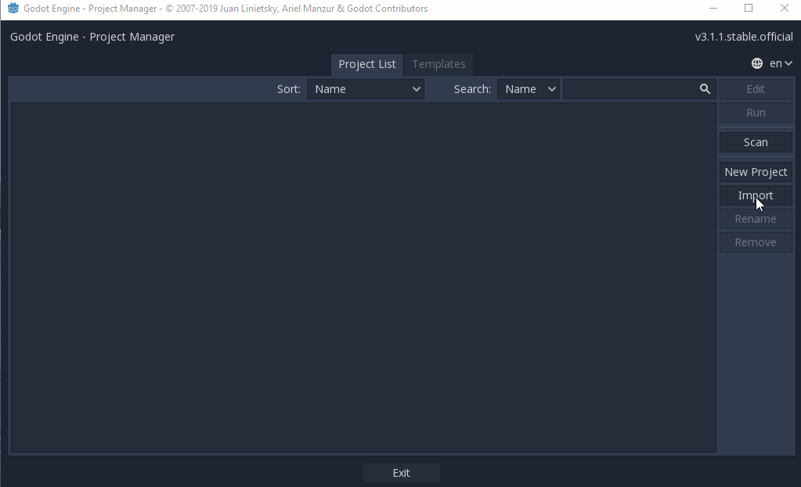
6. Jika Godot sudah selesai impor proyek T2/Tutorial 2,
maka akan muncul tampilan Godot Editor.
Tampilan default Godot Editor dapat dilihat pada cuplikan gambar berikut:
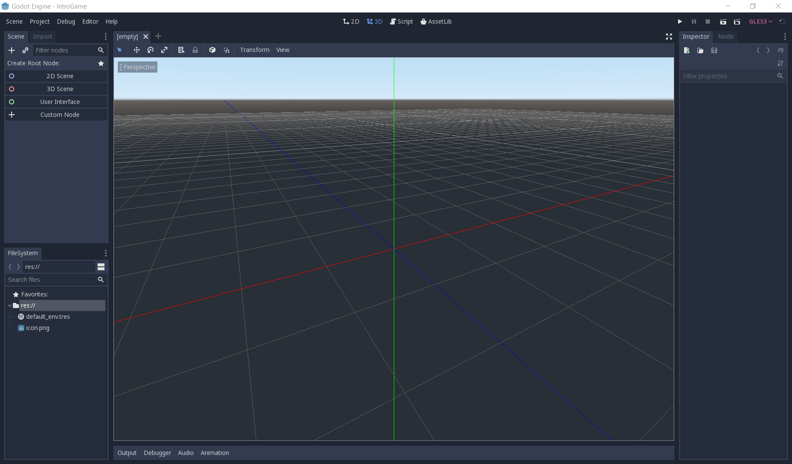
Tampilan Godot Editor di atas menampilkan ruang kerja (workspace) 3D. Untuk kebutuhan tutorial ini, ganti workspace ke mode 2D dengan tombol shortcut F1 atau klik tombol 2D yang berada di bagian atas editor.
Antarmuka Godot Editor
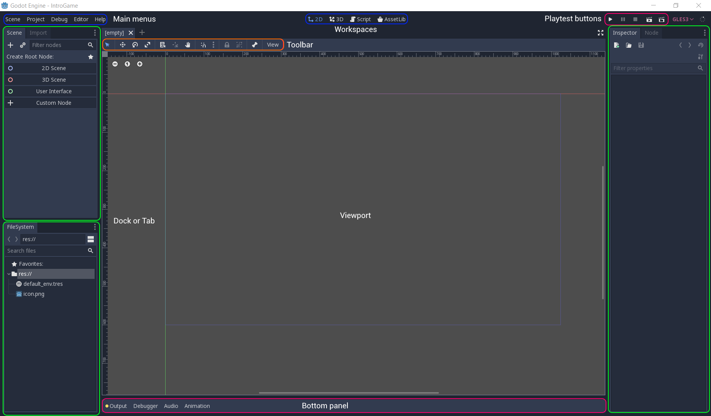
Tampilan Godot Editor terdiri dari beberapa panel yang akan dijelaskan sebagai berikut:
- Viewport Jendela yang menampilkan scene dalam game, code editor, atau Asset Library sesuai dengan apa yang dipilih pada Workspaces.
- Workspaces Panel untuk mengganti apa yang ditampilkan pada Viewport. Ada 4 jenis: 2D, 3D, Script, dan AssetLib.
- 2D menampilkan scene dengan tampilan dua dimensi.
- 3D menampilkan scene dengan tampilan tiga dimensi.
- Script menampilkan code editor dan debugger.
- AssetLib menampilkan library addons, scripts, dan aset-aset gratis.
- Playtest Buttons Panel untuk menjalankan proyek atau scene.
- FileSystem Tab untuk mengatur dan menyusun berkas-berkas dan aset-aset di dalam proyek yang sedang dibuka.
- Scene Tab yang menampilkan hirarki dari objek-objek yang berada di dalam scene yang sedang aktif.
- Import Jendela untuk melakukan pengaturan import pada berkas aset yang sedang dipilih.
- Inspector Menampilkan rincian spesifik dari objek yang sedang dipilih dalam scene. Pada umumnya terdapat komponen Transform yang mengatur posisi, rotasi, dan skala dari objek yang dipilh. Selain itu, juga terdapat pengaturan spesifik tergantung dari tipe objek yang sedang dipilih.
- Node Tab terdiri dari dua bagian: Signals dan Groups. Signals mengandung daftar events atau sinyal sesuai dengan tipe objek yang sedang dipilh. Groups digunakan untuk mengelompokkan objek yang sedang dipilih ke dalam kelompok tertentu supaya memudahkan untuk mencari atau mengatur beberapa objek serupa dalam satu kelompok.
- Output Menampilkan console log dari Godot Engine.
- Debugger Mengandung beberapa tools yang dapat digunakan untuk melakukan debugging ketika menemui masalah dalam pengembangan. Tools yang tersedia adalah:
- Debugger menampilkan proses runtime.
- Error menampilkan error yang muncul ketika menjalankan game.
- Profiler menampilkan profile dari setiap function call yang terjadi di dalam game.
- Monitor menampilkan performance parameter dari game, seperti FPS (frame per second), physics collisions, dan lain-lain.
- Video Mem menampilkan penggunaan memori dari game yang sedang berjalan.
- Misc menampilkan opsi-opsi debug lainnya.
- Audio Tab yang membantu melakukan pengaturan audio dalam game.
- Animation Jendela untuk membuat dan mengatur timing dan keyframe dari animasi yang digunakan.
Untuk mempercepat beberapa operasi pada Godot Editor, terdapat beberapa tombol shortcut yang dapat kamu gunakan, seperti:
- F1: Ganti viewport ke mode 2D.
- F2: Ganti viewport ke mode 3D.
- F3: Ganti viewport menjadi script editor.
- Shift + F1: Buka tampilan pencarian dokumentasi.
- Q: Ganti mode manipulasi menjadi Select.
- W: Ganti mode manipulasi menjadi Move.
- E: Ganti mode manipulasi menjadi Rotate.
- S: Ganti mode manipulasi menjadi Scale.
- R: Ganti mode manipulasi menjadi Ruler
Tombol-tombol shortcut lainnya dapat dilihat di menu Editor > Editor Settings > Shortcuts.
Selanjutnya kamu akan berkenalan dengan konsep Node dan Scene yang merupakan komponen fundamental dalam game yang dibuat menggunakan Godot.
Konsep Node dan Scene
Salah satu alasan mengapa kuliah Game Development di Fasilkom UI membutuhkan kuliah Struktur Data & Algoritma (SDA) sebagai prasyarat adalah agar dapat memahami bagaimana sebuah objek game dalam Godot terstruktur. Godot merepresentasikan dunia game beserta objek-objek di dalamnya dalam bentuk hirarki pohon (tree). Sebuah objek, abstrak maupun konkrit, dalam Godot direpresentasikan sebagai sebuah Node, dimana node tersebut bisa memiliki struktur hirarki yang rekursif layaknya tree.

Sebuah node pada Godot Engine memiliki atribut/sifat berikut:
- Memiliki nama.
- Memiliki atribut-atribut (properties) yang dapat diubah.
- Dapat menerima fungsi callback untuk diproses per frame (atau dengan kata lain: diproses setiap 1 kali iterasi game loop).
- Dapat di-extend untuk memiliki lebih banyak fungsi. Dengan kata lain, sebuah node bisa memiliki hubungan seperti inheritance di paradigma pemrograman objek (OOP).
- Dapat ditambahkan/dicangkokkan ke node lain sebagai anak node (child node).
Sebuah hirarki node, atau selanjutnya disebut sebagai tree, dapat membentuk sebuah Scene di dalam Godot. Sifat khusus dari scene yang berbeda dari node adalah sebuah scene dapat disimpan ke media penyimpan, dapat dibaca kembali dari media penyimpan, dan dapat dibuat menjadi instance baru di dalam sebuah scene yang berbeda.
Catatan: Bagi kamu yang familiar dengan game engine Unity, konsep scene di Godot mirip dengan prefab dan
GameObjectpada Unity, dimana scene pada Godot dapat dikomposisikan sebagai anak sebuah scene lain. Selain itu, scene di Godot pada saat yang bersamaan juga seperti scene di Unity, yaitu representasi dari ruang dimana permainan berlangsung. Di Unity, scene digunakan lebih harfiah, yaitu untuk merepresentasikan 1 atau lebihGameObjectsehingga membentuk ruang permainan.
Untuk memperjelas konsep node dan scene, ada baiknya jika kamu langsung praktik melihat node dan scene yang sudah disiapkan.
Inspeksi Node dan Scene
Pada panel FileSystem, klik 2x berkas bernama MainLevel.tscn. Viewport pada
Godot Editor akan menampilkan visualisasi sebuah scene. Perhatikan juga panel
panel Scene yang menampilkan hirarki node pada scene Main yang sedang
dibuka.
Perhatikan bagian-bagian penting dari scene yang sedang dibuka:
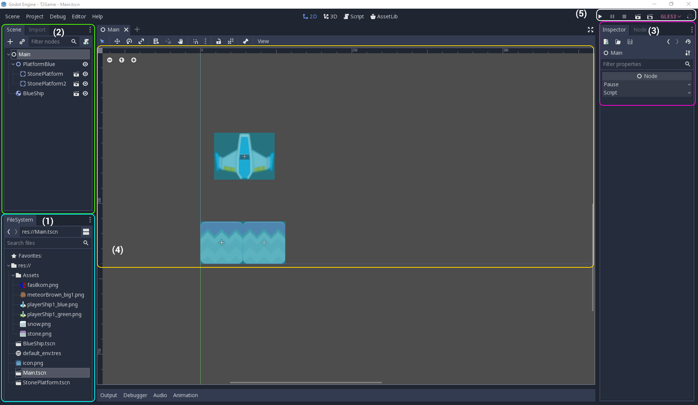
- Panel FileSystem menampilkan koleksi berkas yang ada di dalam proyek
T2/Tutorial 2. Saat ini, ada 3 buah berkas scene yang berakhiran.tscndi dalam folderscenesdan ada folderassetsberisi berkas-berkas gambar dengan format PNG. Perlu diingat bahwa semua aset pada game Godot perlu ditaruh dalam folder proyek game. - Panel Scene menampilkan hirarki node di dalam scene yang sedang
dibuka. Scene
MainLevelmemiliki sebuah root node bernamaMainLevel, dimana node tersebut memiliki tiga buah child node, yaituPlatformBlue,BlueShip, danObjectiveArea. Selanjutnya, masing-masingPlatformBluedanObjectiveAreajuga memiliki dua child node.Catatan: Kamu juga dapat mengetahui Type dari suatu node dengan menaruh pointer mouse di atas nama node. Akan muncul popup yang menampilkan tipe node yang ada di bawah pointer.
- Panel Inspector dapat menampilkan atribut (properties) dari node
yang sedang dipilih melalui Viewport atau panel Scene. Pada gambar di atas,
panel Inspector menampilkan atribut dari node
Main. Apabila kamu klik tab Node di panel tersebut, maka akan muncul daftar fungsi callback yang dimiliki oleh node. - Viewport menampilkan visualisasi dari scene yang sedang dibuka. Saat
ini ada kotak samar-samar dengan garis biru yang melambangkan area pandang
game ketika game dijalankan kelak. Area dalam kotak bergaris biru di dalam
Viewport akan divisualisasikan ke layar PC ketika permainan dimulai.
Catatan: Kamu juga dapat melihat ada semacam penggaris (ruler) di bagian terluar Viewport. Ruler tersebut memberikan informasi posisi koordinat dalam scene. Satu hal lagi yang perlu kamu ketahui adalah titik
(0, 0)pada sistem yang menampilkan citra di komputer umumnya mulai dari pojok kiri atas bidang. Tidak seperti yang telah kamu pelajari dari matematika dasar, yaitu dari pojok kiri bawah bidang. - Playtest Buttons memiliki tombol untuk menjalankan game loop pada
proyek atau scene yang sedang dibuka. Jika kamu menekan tombol Play
(shortcut: F5), maka akan muncul popup jika belum ada Main Scene.
Silakan mengikuti petunjuk untuk mengatur agar scene
MainLevelmenjadi Main Scene proyek game ini. Jika kamu ingin menjalankan scene yang dibuka terlepas apakah scene tersebut berupa Main Scene atau tidak, kamu bisa menggunakan tombol Play Scene (shortcut: F6).
Latihan: Playtest
Coba jalankan contoh tutorial 2 ini dengan menekan tombol Play, kemudian tekan tombol panah Atas dan Bawah. Kamu dapat melihat objek landasan dapat bergerak ke atas dan ke bawah. Selain itu, objek pesawat juga akan ikut bergerak setelah terkena efek physics ketika bergesekan dengan landasan.
Saat ini contoh tutorial 2 sudah mengandung implementasi mekanika pergerakan landasan di sumbu vertikal.
Pergerakan di sumbu vertikal ditangani menggunakan scripting sederhana pada scene PlatformBlue.
Apabila pemain menekan tombol panah Atas, maka objek landasan akan bergerak ke atas.
Sebaliknya, jika pemain menekan tombol panah Bawah, maka objek landasan akan bergerak ke bawah.
Implementasi event handling untuk penekanan tombol ini dapat dilihat di berkas PlatformBlue.gd yang sudah diasosiasikan ke scene PlatformBlue.
Sekarang coba gerakkan objek landasan ke atas sehingga objek pesawatnya hampir menyentuh batas atas area permainan/window. Kemudian jawablah pertanyaan-pertanyaan berikut:
- Apa saja pesan log yang dicetak pada panel Output?
- Coba gerakkan landasan ke batas area bawah, lalu gerakkan kembali ke atas hingga hampir menyentuh batas atas. Apa saja pesan log yang dicetak pada panel Output?
- Buka scene
MainLeveldengan tampilan workspace 2D. Apakah lokasi sceneObjectiveAreamemiliki kaitan dengan pesan log yang dicetak pada panel Output pada percobaan sebelumnya?
Dari latihan di atas, kamu baru saja melihat fitur lain dari scripting pada Godot.
ObjectiveArea menggunakan sistem Signal untuk mengimplementasikan Observer Pattern untuk keperluan event-handling.
Beberapa event yang dapat dibuat oleh node dapat diasosiasikan ke sebuah fungsi melalui sistem Signal milik Godot.
Kamu dapat melihat contohnya pada scene ObjectiveArea, tepatnya pada kumpulan signal dari node Area2D yang dimiliki scene ObjectiveArea.
Fungsi event handler-nya dapat dilihat pada berkas ObjectiveArea.gd.
Catatan: Pembahasan lebih lanjut mengenai scripting akan diperkenalkan pada tutorial berikutnya mengenai Game Programming.
Tuliskan hasil observasi kamu ke dalam berkas Markdown bernama README.md di repositori pengerjaan tutorial 2.
Jangan lupa untuk membaca dokumentasi Godot untuk dapat mengelaborasikan jawaban dengan lebih rinci.
Latihan: Memanipulasi Node dan Scene
Sekarang coba kamu buka scene BlueShip. Tampilan Viewport dan beberapa
panel lainnya akan berubah. Kamu akan melihat bahwa scene BlueShip
memiliki sebuah root node bernama BlueShip dan memiliki dua buah
child node, yaitu Sprite dan CollisionShape2D. Pilih node BlueShip
dan fokus pada tampilan Inspector.

Inspector menampilkan semua atribut yang dimiliki oleh node BlueShip.
Atribut-atribut yang dimiliki merupakan hasil dari hubungan inheritance
dari hirarki tipe node. Jika kamu masih ingat node MainLevel di scene
MainLevel, node tersebut adalah node dengan tipe Node dimana atributnya
hanya ada dua, yaitu Pause dan Script. Tipe Node adalah tipe node
paling dasar pada hirarki tipe node dalam Godot. Semua tipe node pasti
merupakan anak atau turunan dari tipe Node. Pada kasus node BlueShip,
tipe node BlueShip adalah RigidBody2D, dimana RigidBody2D adalah
subtipe dari PhysicsBody2D, dan seterusnya hingga mencapai tipe paling dasar,
yaitu Node. Hirarkinya ditampilkan secara reverse-order di dalam panel
Inspector.
Catatan: Bagi kamu yang familiar dengan game engine Unity, kamu akan sadar bahwa tidak semua objek dalam Godot bisa memiliki komponen Transform. Objek abstrak pada Godot bisa direpresentasikan sebagai sebuah node bertipe
Node. Jika ada kebutuhan objek abstrak untuk memiliki lokasi/posisi/rotasi, maka bisa gunakan node dengan tipeNode2D(atau ekuivalennya di game 3D).
Sekarang coba kamu inspeksi scene-scene pada contoh proyek tutorial 2 dan jawablah pertanyaan-pertanyaan berikut:
- Scene
BlueShipdanStonePlatformsama-sama memiliki sebuah child node bertipeSprite. Apa fungsi dari node bertipeSprite? - Root node dari scene
BlueShipdanStonePlatformmenggunakan tipe yang berbeda.BlueShipmenggunakan tipeRigidBody2D, sedangkanStonePlatformmenggunakan tipeStaticBody2D. Apa perbedaan dari masing-masing tipe node? - Ubah nilai atribut
MassdanWeightpada tipeRigidBody2Dsecara bebas di sceneBlueShip, lalu coba jalankan sceneMainLevel. Apa yang terjadi? - Ubah nilai atribut
Disabledpada tipeCollisionShape2Ddi sceneStonePlatform, lalu coba jalankan sceneMainLevel. Apa yang terjadi? - Pada scene
MainLevel, coba manipulasi atributPosition,Rotation, danScalemilik nodeBlueShipsecara bebas. Apa yang terjadi pada visualisasiBlueShipdi Viewport? - Pada scene
MainLevel, perhatikan nilai atributPositionnodePlatformBlue,StonePlatform, danStonePlatform2. Mengapa nilaiPositionnodeStonePlatformdanStonePlatform2tidak sesuai dengan posisinya di dalam scene (menurut Inspector) namun visualisasinya berada di posisi yang tepat?
Catatan: Jangan lupa ada shortcut Shift + F1 untuk memunculkan dokumentasi tipe-tipe node pada Godot.
Tuliskan hasil observasi kamu ke dalam berkas Markdown bernama README.md di repositori pengerjaan tutorial 2.
Jangan lupa untuk membaca dokumentasi Godot untuk dapat mengelaborasikan jawaban dengan lebih rinci.
Latihan Mandiri: Membuat Level Baru
Silakan baca referensi yang tersedia untuk belajar bagaimana caranya untuk membuat node dan scene di Godot.
Kemudian silakan berlatih untuk membuat level baru berisi tipe pesawat dan landasan yang berbeda dari level awal.
Gunakan aset gambar pesawat dan landasan yang berbeda dari BlueShip dan StonePlatform untuk membuat tipe pesawat dan landasan baru.
Pada level baru ini, diharapkan kamu dapat membuat:
- Objek pesawat baru.
- Objek landasan baru.
- Desain level yang berbeda dari level awal dengan menempatkan
ObjectiveAreadi pojok kanan atas atau pojok kana bawah area permainan di level baru. - Silakan berkreasi jika ingin memoles level awal maupun level baru. Beberapa ide polishing:
- Implementasi reset kondisi level ketika pesawatnya jatuh ke luar area permainan.
- Implementasi transisi level awal ke level baru ketika pemain berhasil mencapai
ObjectiveArea. Misalnya menampilkan pesan kemenangan sesaat sebelum pindah level. - Menambahkan gambar latar.
- Menambahkan rintangan objek statis pada level baru.
- Dan lain-lain. Silakan berkreasi!
Pengumpulan
Tulis jawaban dan hasil observasi kamu pada berkas teks README.md.
Teks ditulis dengan rapi menggunakan format Markdown.
Lalu jangan lupa untuk menyimpan hasil pengerjaan tutorial seperti scene baru dan script baru.
Kumpulkan semua berkasnya berkasnya ke dalam Git dan push ke repositori Git pengerjaan tutorial.
Apabila kamu mengerjakan latihan mandiri, pastikan scene dan node sudah tercatat masuk ke dalam repositori Git.
Tenggat waktu pengumpulan adalah 21 Februari 2024 pukul 21:00.
Referensi
- Introduction to Godot
- Nodes and Scenes
- Materi tutorial pengenalan Godot Engine, kuliah Game Development semester gasal 2021/2022 Fakultas Ilmu Komputer Universitas Indonesia.
Tutorial 3 - Introduction to Game Programming with GDScript for Implementing Basic 2D Game Mechanics
Selamat datang pada tutorial ketiga mata kuliah Game Development. Pada tutorial kali ini, kamu akan mempelajari sintaks bahasa utama engine Godot, yaitu GDScript, beserta penggunaannya dalam konsep node dan object pada engine Godot. Di akhir tutorial ini, diharapkan kamu paham dengan penggunaan GDScript dan dapat menerapkannya untuk mengimplementasikan mekanik dasar permainan 2D platformer.
Daftar Isi
- Tutorial 3 - Introduction to Game Programming with GDScript for Implementing Basic 2D Game Mechanics
- Daftar Isi
- Pengantar
- Basic 2D Plane Movement
- Latihan Mandiri: Eksplorasi Mekanika Pergerakan
- Skema Penilaian
- Pengumpulan
- Referensi
Pengantar
Is Scripting an Instrument?
Pekan lalu kita telah mencoba membuat objek sederhana sebagai scene yang terdiri dari komposisi satu atau lebih node. Objek di dalam permainan bisa saja berupa objek statik yang tidak memiliki peran apapun di dalam permainan, seperti menjadi hiasan atau rintangan. Namun pada umumnya, kita membutuhkan objek yang memiliki peran dan dapat berinteraksi dengan objek lainnya di dalam sistem permainan. Peran dan interaksi antar objek di dalam sistem permainan serta hubungannya dengan interaksi pemain dapat didefinisikan menggunakan pemrograman berbasis scripting.
Pemrograman menggunakan script biasanya mengacu pada penggunaan bahasa pemrograman yang langsung dijalankan (atau, diinterpretasikan) oleh sebuah runtime. Contoh pemrograman menggunakan script yang terkenal antara lain adalah bahasa Python dan JavaScript. Jika kamu masih ingat pengalaman belajar bahasa Python di kuliah pemrograman dasar, maka kamu pasti ingat bahwa Python tidak membutuhkan compiler apapun. Program Python dapat langsung berjalan tanpa melalui proses kompilasi terlebih dahulu. Contoh lain bahasa script adalah JavaScript. Kode JavaScript akan dijalankan oleh runtime seperti engine JavaScript di dalam browser atau runtime khusus untuk menjalankan kode JavaScript di luar browser seperti Node atau Deno.
Engine Godot versi 3 mendukung empat (4) bahasa pemrograman: GDScript, Visual Script, C#, dan C++. Pada mata kuliah Game Development ini, kamu akan belajar sintaks dan cara penggunaan bahasa GDScript. Beberapa alasan mengapa GDScript dipilih sebagai bahasa pemrograman utama adalah:
- Integrasi penuh dengan engine Godot dan komponen editornya.
- Sederhana dan cepat.
- Sintaks yang mirip dengan bahasa scripting populer lainnya seperti Python dan Lua.
Catatan: bagi pembaca yang sudah berpengalaman menggunakan bahasa C# dan engine Unity, sebenarnya Godot juga menyediakan varian engine yang menerima bahasa C#. Dukungannya juga sudah relatif stabil di versi Godot terkini. Namun untuk keperluan pembelajaran bagi seluruh peserta kuliah, kita akan fokus menggunakan bahasa GDScript selama satu semester ini.
GDScript Example
Contoh sebuah script yang dituliskan dalam GDScript adalah berikut:
1 2 3 4 5 6 7 8 9 10 11 12 13 14 15 16 17 18 19 20 21 22 23 24 25 26 27 28 29 30 31 32 33 34 35 36 37 38 39 40 41 42 43 44 45 46 47 48 49 50 51 52 53 54 55 56 57 58 59 60 61 62 63 64 65 66 67 68 69 70 71 72 73 74 | |
Catatan: contoh di atas diambil dari dokumentasi resmi Godot berikut: https://docs.godotengine.org/en/3.5/tutorials/scripting/gdscript/gdscript_basics.html
Beberapa hal yang perlu kita bahas:
- Bahasa GDScript memiliki paradigma object-oriented (OO) dan imperative.
Sebuah script akan memiliki hubungan inheritance ke sebuah superclass.
Jika tidak mendeklarasikan inheritance secara eksplisit, maka sebuah class di GDScript secara implisit merupakan turunan dari sebuah root superclass bernama
Object. - Bahasa GDScript memiliki type system yang bersifat dynamic. Kamu bisa mendeklarasikan variabel ataupun fungsi tanpa tipe data. Namun sangat disarankan untuk secara eksplisit tetap mendeklarasikan tipe data pada variabel dan fungsi. Tujuannya untuk membantu autocompletion dan dokumentasi yang disediakan oleh editor.
- Standar penulisan GDScript menyerupai Python. Misalnya, blok kode dibedakan menggunakan indent.
Untuk lebih lengkapnya, silakan merujuk ke dokumen GDScript style guide.
Untuk mempermudah konsistensi penulisan kode di lingkungan pengembangan, kamu dapat merujuk ke berkas
.editorconfigyang tersedia di template Tutorial 3 serta memanfaatkan program Python bernamagdtoolkityang menyediakan linter dan code formatter GDScript.
Basic 2D Plane Movement
Pada tutorial ini, kita akan mengimplementasikan mekanika dasar sebuah permainan berjenis (genre) platformer. Pemain akan dapat menggerakkan sebuah objek ke kiri dan ke kanan serta melompat. Tutorial ini akan mendemonstrasikan:
- Membuat sebuah objek
Kinematic2Ddengan child nodeCollision2DdanSprite. - Membuat script dan memasangkan script tersebut ke objek di dalam permainan.
- Implementasi physics dasar.
Setting Things Up
Mulai tutorial ini dengan membuat salinan repositori Git template proyek Tutorial 3. Buka laman GitHub repositori Git template proyek Tutorial 3, lalu klik "Use this template" untuk membuat salinan repositori Git tersebut ke dalam akun GitHub pribadi. Selanjutnya, clone repositori template proyek Tutorial 3 dari akun GitHub milikmu ke lingkungan pengembangan lokal. Kemudian buka proyeknya menggunakan Godot.
Setelah berhasil membuka proyeknya menggunakan Godot, buka folder scenes dan buka scene Main.tscn.
Di dalam mode workspace 2D, kamu dapat melihat ada ground atau landasan yang melayang di dalam scene.
Kita akan menaruh objek yang dapat bergerak disana.

Buat scene baru dan tambahkan root node Kinematic2D pada scene tersebut.
Ubah nama node tersebut menjadi Player.
Tambahkan child node Sprite dan CollisionShape2D dengan menggunakan menu Add Child Node.
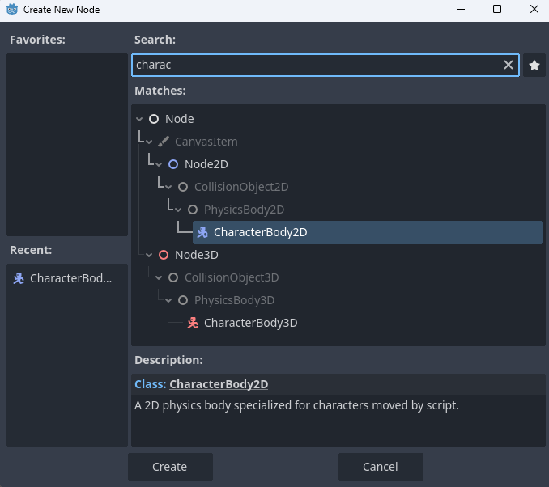


Pilih node CollisionShape2D dan buka panel Inspector. Tambahkan Shape pada node tersebut dengan memilih new RectangleShape2D.

Pilih node Sprite dan buka panel Inspector. Pada menu texture, pilih menu Load dan buka folder Assets, kemudian pilih salah satu dari sprite pesawat yang ada.

Save Scene tersebut dalam folder Scenes. Objek ini akan menjadi target scripting.
Catatan: Nama node, scene, dan pilihan sprite dibebaskan. Kamu diperbolehkan untuk menggunakan aset milik sendiri.
Tampilan Godot Editor terdiri dari beberapa panel yang akan dijelaskan pada subbab berikutnya.
Making a Script
Pada panel Scene, klik kanan pada node Player. Pilih Attach Script pada menu yang muncul. Akan muncul dialog untuk membuat script. Akan ada beberapa pilihan yang tersedia, diantaranya nama script, bahasa script, dll.
Karena script akan dipasang pada KinematicBody2D, script otomatis meng-inherit class tersebut. Pada dasarnya, ini adalah skema dari GDScript, karena kita ingin menambahkan fungsionalitas baru pada node yang kita inginkan.
Ubah nama script menjadi Player.gd kemudian simpan script pada folder scenes.
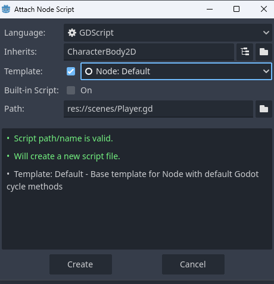
Script akan otomatis terbuka pada Godot Editor. Setiap script yang dibuat akan diberikan template:
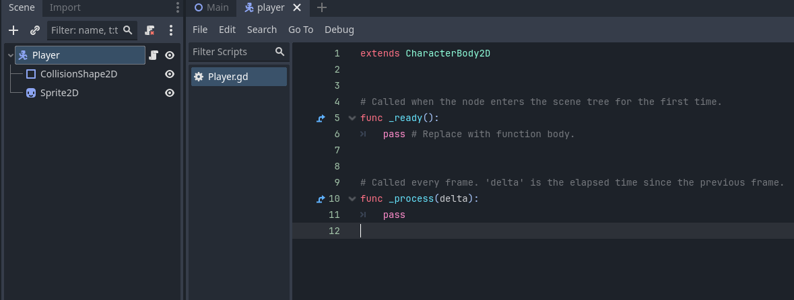
Terdapat dua fungsi dasar yang hampir selalu ada pada bermacam-macam script: _ready() dan _process(). Fungsi _ready() akan selalu dipanggil ketika sebuah node menjadi aktif pada sebuah scene.
Fungsi _process(delta) akan dipanggil berkala pada setiap frame update.
Catatan: Game Engine memroses banyak frame dalam satu detik. Tergantung hardware, rata-rata komputer memiliki kecepatan proses 60 frames per second (fps). Artinya, dalam satu detik fungsi
_process(delta)dipanggil 60 kali. Bagi yang sudah mengenal engine Unity dan/atau Unreal, kedua fungsi ini memiliki fungsi yang sama denganAwake()/Start()danUpdate().
Latihan: Implementasi Pergerakan Horizontal Menggunakan Script
Sebuah script jika dipasang ke suatu node akan memberikan node tersebut atribut tambahan. Script dapat digunakan untuk mengendalikan node tersebut dan semua child node yang ada.
Tujuan kita adalah menggerakan node Player secara horizontal. Tambahkan cuplikan kode ini pada Player.gd:
1 2 3 4 5 6 7 8 9 10 11 12 13 14 15 16 | |
Jika kamu sedang mengambil atau pernah mengambil mata kuliah aljabar linier, maka kamu akan melihat salah satu manfaat dari ilmu yang dipelajari dari mata kuliah tersebut.
Objek di dalam "dunia" permainan akan memiliki tiga buah komponen utama untuk merepresentasikan wujud objek di dalam permainan. Tiga komponen tersebut adalah: posisi, rotasi, dan skala. Dalam bahasa Inggris, ketiga komponen tersebut biasa disebut sebagai position, rotation, dan scale. Ketiga komponen tersebut biasa direpresentasikan secara internal sebagai struktur vektor (game 2D) dan matriks (game 3D). Sehingga apabila kita akan menyimulasikan interaksi antar objek seperti pergerakan objek di dalam dunia permainan, maka kita akan menggunakan operasi-operasi di aljabar linier untuk dapat memanipulasi objek tersebut. Namun jangan khawatir, bukan berarti kamu harus mengimplementasikan struktur data dan operasi manipulasi vektor dari nol. Game engine biasanya sudah menyertakan fungsi-fungsi terkait manipulasi objek di standard library.
Mari mulai dengan contoh sederhana di tutorial ini, yaitu menggerakkan objek. Perhatikan hal-hal berikut:
export (int) var speed = 400merupakan deklarasi variabel. Export membuat variabel speed dapat diakses lewat visual editor.var velocity = Vector2()adalah deklarasi private variable Vector2. Vector2 adalah tipe data Vector built-in Godot yang memiliki dua arah (x,y).get_input()adalah wrapper function untuk membaca input kemudian menambahkan velocity (kecepatan) pada Player.Input.is_action_pressed(String signal)merupakan fungsi bawaan Godot yang membaca input._physics_processs(delta)dipanggil secara berkala untuk membaca input.move_and_slide(Vector2 vector)merupakan fungsi KinematicBody2D. Ketika fungsi ini dipanggil, KinematicBody2D akan bergerak sebanyak input Vector2.
Catatan: _physics_process(delta) tidak jauh berbeda dari _process(delta). Fungsi ini dipanggil secara berkala, namun memiliki waktu panggil yang konstan tanpa bergantung pada fps.
Jalankan scene dan gunakan tombol panah arah. Player dapat bergerak secara horizontal.
Latihan: Implementasi Physics Sederhana (Gravitasi dan Loncat)
Jika dilihat, Player hanya bergerak horizontal dan tidak dipengaruhi gravitasi. Objek Player tetap diam diatas meskipun tidak berada pada suatu pijakan.
Hal ini merupakan karakteristik dari KinematicBody2D, dimana node tidak dipengaruhi oleh physics yang tersedia dari game engine.
Sedangkan untuk dapat membuat objek terpentaruh physics, maka seharusnya objek tersebut menggunakan node lain bertipe RigidBody2D.
Salah satu alasan mengapa kita tidak memakai RigidBody2D yang dapat dipengaruhi physics Game Engine adalah konsistensi. Dengan memakai KinematicBody2D, objek yang digerakan oleh pemain akan selalu merespon terhadap input yang diberikan, dimana objek RigidBody2D akan mudah terpengaruh oleh physics diluar kendali pemain.
Apabila kita ingin membuat Player kita melompat, maka kita harus bisa membuat Player dipengaruhi gravitasi. Setidaknya, Player harus bisa jatuh. Untuk itu, kita harus menambahkan fungsi physics sendiri, karena kita tidak bisa menggunakan gravitasi Game Engine. Tambahkan baris berikut pada Player.gd:
1 2 3 4 5 6 7 8 9 10 11 12 13 14 15 16 17 18 19 20 | |
Beberapa hal yang ditambahkan:
- Variabel
GRAVITYsebagai angka arbitrer. - Konstanta
UPmerupakan shorthand untuk Vector2 yang mengarah keatas. Pada Godot Engine, koordinat y negatif mengarah keatas. velocity.x = 0memastikan bahwa Player akan berhenti apabila tidak ada tombol yang ditekan.velocity.y += delta * GRAVITYmerupakan fungsi gravitasi untuk Player. Setiap diproses,velocity.yPlayer ditambahkan sejumlah konstanta gravitasi (mengarah kebawah).
Jalankan scene. Objek Player akan jatuh.
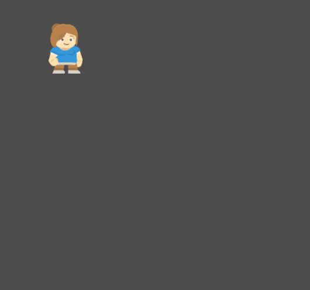
Sekarang Player kita butuh sebuah pijakan. Buka Scene Main.tscn. Tambahkan Scene (objek) Player pada scene main, kemudian jalankan scene. Player akan jatuh, namun berhenti ketika menyentuh tanah. Ketika di tanah, Player masih dapat bergerak secara horizontal.
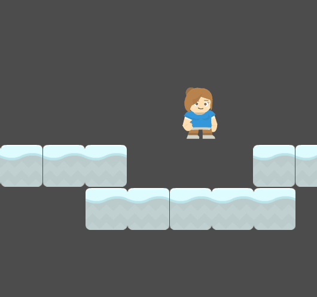
Apabila kita ingin Player melompat, salah satu cara yang bisa digunakan adalah mengubah velocity.y menjadi negatif. Tambahkan cuplikan kode pada Player.gd:
1 2 3 4 5 6 7 8 9 10 11 12 13 14 15 16 | |
Perhatikan bahwa:
is_on_floor()merupakan fungsi bawaan KinematicBody2D dimana node akan mengecek otomatis apabila Collider yang sedang bersentuhan merupakan floor atau bukan.Input.is_action_just_pressed('up')merupakan fungsi input Godot Engine yang mengecek input pertama dari sebuah tombol.
Jalankan Scene. Player sekarang bisa melompat.
Selamat, kamu telah menyelesaikan tutorial ini!
Latihan Mandiri: Eksplorasi Mekanika Pergerakan
Sebagai bagian dari latihan mandiri, kamu diminta untuk praktik mengembangkan lebih lanjut mekanika pergerakan karakter di game platformer. Beberapa ide fitur lanjutan terkait pergerakan karakter di game platformer:
- Double jump - karakter pemain bisa melakukan aksi loncat sebanyak dua kali.
- Dashing - karakter pemain dapat bergerak lebih cepat dari kecepatan biasa secara sementara ketika pemain menekan tombol arah sebanyak dua kali.
- Crouching - karakter pemain dapat jongkok dimana sprite-nya terlihat lebih kecil (misal: sprite karakter manusianya terlihat berjongkok) dan kecepatan pergerakannya menjadi lebih lambat ketika lagi jongkok
- Dan lain-lain. Silakan cari contoh mekanika pergerakan 2D lainnya yang mungkin diimplementasikan di dalam permainan tipe platformer.
Silakan pilih fitur lanjutan yang ingin dikerjakan.
Kemudian jelaskan proses pengerjaannya di dalam sebuah dokumen teks README.md.
Cantumkan juga referensi-referensi yang digunakan sebagai acuan ketika menjelaskan proses implementasi.
Skema Penilaian
Pada tutorial ini, ada empat kriteria nilai yang bisa diperoleh:
- 4 (A) apabila kamu mengerjakan tutorial dan latihan melebihi dari ekspektasi tim pengajar. Nilai ini dapat dicapai apabila mengerjakan seluruh Latihan dan Latihan Mandiri, ditambah dengan memoles (polishing) lebih lanjut permainannya. Misal, salah satu ide polishing sederhana yang dapat dikerjakan adalah memperbaiki sprite karakter sehingga tampilannya sesuai dengan arah jalannya karakter. Ketika karakter jalan ke kiri, maka wajah dan badan di sprite karakter juga menghadap ke kiri. Begitu pula sebaliknya. Akan lebih baik lagi jika bisa mengimplementasikan animasi pada sprite, namun kamu perlu mengeksplorasi materi yang belum dibahas di tutorial ini.
- 3 (B) apabila kamu hanya mengerjakan tutorial dan latihan sesuai dengan instruksi. Nilai ini dapat dicapai apabila mengerjakan seluruh Latihan dan Latihan Mandiri.
- 2 (C) apabila kamu hanya mengerjakan tutorial hingga tuntas. Nilai ini dapat dicapai apabila mengerjakan seluruh Latihan namun tidak mengerjakan Latihan Mandiri.
- 1 (D) apabila kamu hanya sekedar memulai tutorial dan belum tuntas.
- 0 (E) apabila kamu tidak mengerjakan apapun atau tidak mengumpulkan.
Pengumpulan
Kumpulkan semua berkas pengerjaan tutorial dan latihan ke dalam Git dan push ke repositori Git pengerjaan tutorial 3. Apabila kamu mengerjakan latihan mandiri, pastikan scene dan node sudah tercatat masuk ke dalam repositori Git. Kemudian, kumpulkan tautan ke repositori Git hasil pengerjaan tutorial 3 kamu di slot pengumpulan yang tersedia di SCELE.
Tenggat waktu pengumpulan adalah 28 Februari 2024 pukul 21:00.
Referensi
- Kinematic Character (2D)
- Scripting
- 2D Movement Overview
- Kenney Assets
- Materi tutorial pengenalan Godot Engine, kuliah Game Development semester gasal 2020/2021 Fakultas Ilmu Komputer Universitas Indonesia.
Tutorial 4 - Basic 2D Level Design
Selamat datang pada tutorial keempat kuliah Game Development. Pada tutorial kali ini, kamu akan mempelajari cara membuat level sederhana pada bidang 2D menggunakan engine Godot. Selain itu, kamu juga akan mempelajari mekanisme event handling menggunakan sistem signal di Godot dan implementasi objek spawner untuk membuat rintangan di dalam permainan. Di akhir tutorial ini, diharapkan kamu paham dengan penggunaan tilemap dan sistem signal di Godot.
Daftar Isi
- Tutorial 4 - Basic 2D Level Design
- Daftar Isi
- Pengantar
- Latihan: Membuat Tile Map
- Latihan: Membuat Kamera
- Latihan: Membuat Kondisi Akhir Permainan Menggunakan Signal
- Latihan: Membuat Rintangan Membuat Spawner
- Latihan Mandiri: Membuat Level Baru Dengan Tile Map & Obstacle Berbeda
- Skema Penilaian
- Pengumpulan
- Referensi
Pengantar
What Is a Level?
Pada tutorial sebelumnya kita sudah membuat sebuah objek player sederhana yang dapat bergerak ke kanan dan kiri dan juga dapat melompat. Namun tempat ia bergerak masih sangat terbatas dan belum memiliki tujuan (objective) di dalam permainan. Oleh karena itu, kita memerlukan sebuah level supaya pemain memiliki tujuan di dalam permainan ketika mengendalikan objek player.
Sebuah level pada dasarnya adalah tempat dimana player dapat melakukan action dan mungkin memiliki sebuah goal.
Level Example
Contoh sebuah level yang terlihat sederhana:

Super Mario Bros World 1-1, Nintendo 1985
Kita akan membuat sebuah level 2D sederhana menggunakan salah satu fitur engine Godot yaitu tile mapping menggunakan TileMap.
Pada tutorial ini akan didemonstrasikan:
- Membuat
TileSetuntukTileMap. - Membuat level menggunakan
TileMap. - Membuat kamera mengikuti objek player.
- Membuat pemicu kondisi (trigger) menang dan kalah.
Creating A Simple Level using TileMap
Preparation
Mari memulai tutorial ini dengan membuat salinan repositori Git template proyek Tutorial 4.
Buka laman GitHub repositori template proyek Tutorial 4
dan klik "Use this template" untuk membuat salinan repositori Git tersebut ke dalam akun GitHub pribadi.
Kemudian atur visibility repositori Git proyek Tutorial 4 kamu menjadi Public
dan salin (git clone) repositori Git Tutorial 4 milikmu ke lingkungan pengembangan lokal.
Jika sudah membuat salinan repositori Git proyek Tutorial 4 secara lokal,
buka proyek Tutorial 4 menggunakan Godot.
Kemudian buka scene Level1.tscn dan coba jalankan playtest pada scene tersebut.
Kamu akan melihat ada suatu makhluk yang akan langsung jatuh ketika scene dimainkan.

Klik kanan pada node Level1 dan pilih "Add Child Node", kemudian pilih TileMap.
Setelah TileMap berhasil ditambahkan akan terlihat grid samar-samar berwarna oranye pada scene dan muncul 1 tab baru disebelah scene.
(Jika tidak terjadi apa-apa, coba pilih node TileMap)
Pada tab Inspector, atur Size menjadi 128 untuk X dan Y.

Latihan: Membuat Tile Map
Jika diibaratkan dengan melukis, kita baru saja mempersiapkan kanvas dan kuas. Kita masih kekurangan cat untuk melukis.
Untuk mempersiapkan cat, pada tab Inspector klik dropdown menu TileSet dan pilih New TileSet.
Lalu klik lagi dropdown tadi dan pilih Edit.

Akan muncul window baru dengan nama TileSet.

Lalu klik ikon plus di kiri bawah window tersebut dan pilih assets/kenney_platformerpack/Spritesheets/*.
Dalam contoh ini digunakan spritesheet_gr_dirt.png, namun kamu bebas menggunakan yang tersedia atau menambah sendiri.
Jika sudah maka akan tampil seperti berikut.

Terdapat beberapa cara untuk membuat Tile Set:
- Single Tile untuk tile satuan jika ingin memasukan setiap tile satu-persatu.
- Autotile untuk tile yang bisa di automasikan pemilihannya berdasarkan tile sekelilingnya, contohnya pada game dengan tipe top-down perspective.
- Atlas untuk tile yang bertipe sejenis dan akan lebih mudah diorganisir daripada menggunakan single tile berulang kali.
Pada tutorial ini kita akan menggunakan Atlas.
Klik New Atlas, lalu drag area yang akan dijadikan Tile Set.
Tips: supaya hidup kamu mudah silakan menggunakan fitur
snap to grid(Klik logo magnet).
Kemudian pada tab Inspector silakan isi nama sesuka hati dan atur Subtile Size ke 128 untuk X dan Y.
Jika sudah jangan lupa untuk men-save Tile Set (penamaan bebas).

Supaya player dapat collide dengan tile, kita perlu menambahkan collider pada tile tersebut.
Untuk melakukannya klik Collision, klik ke subtile yang dituju, klik ikon kotak (no 3)), dan akhirnya klik lagi subtile tersebut.

Untuk mengatur bentuk collider silakan geser vertex (lingkaran merah) sesuai keinginan. Ulangi langkah 2 sampai 4 untuk setiap subtile. Berikut contoh hasil pengaturan bentuk-bentuk collider pada setiap subtile:

Jika sudah berhasil, klik node TileMap pada tab Scene dan Tile Set tadi akan tampil dan siap untuk digunakan. Selamat berkreasi.

Note : Node TileMap di scale menjadi 0.5 pada X dan Y agar ukuran tile tidak terlalu besar dibanding player. (Tab Inspector > Transform > Scale)
Latihan: Membuat Kamera
Sekarang kita sudah memiliki sebuah level, namun jika scene di-play kamera akan diam di tempat awal dan membatasi apa yang bisa dilihat. Oleh karena itu kita akan membuat kamera yang akan mengikuti kemanapun mahluk pink itu pergi.
Buka scene scenes/Player.tscn, tambah node Camera2D sebagai child node dari Player.
Kemudian pada tab Inspector centang Current.

Sekarang kamera akan selalu mengikuti mahluk itu kemanapun ia pergi.

Latihan: Membuat Kondisi Akhir Permainan Menggunakan Signal
Sebuah level tidak lengkap tanpa tujuan akhir, atau jika si mahluk terpleset dan jatuh ke jurang, dia hanya bisa berkontemplasi sampai akhir jaman. Supaya mahluk tersebut tidak bernasib sama seperti Kars, mari kita buat zona untuk lose dan win condition.
Pertama buat scene baru (nama bebas) dengan Area2D sebagai root node.

Lalu tambahkan node CollisionShape2D sebagai child node Area2D tadi.
Jangan lupa untuk membuat collision shape pada node CollisionShape2D (Kamu seharusnya sudah pernah melakukannya pada tutorial sebelumnya).

Kemudian buat dan tempelkan sebuah script pada node Area2D (penamaan bebas, misal: LoseCondition, LoseArea).
Hapus semua baris pada script baru tersebut kecuali statement extends.
Kita akan menggunakan Signals untuk fitur ini.
What is Signals?
Sesuai dengan namanya, Signals berfungsi untuk memberikan "tanda" jika suatu kondisi khusus terpenuhi. Yang dimaksud dengan memberikan tanda disini adalah mengeksekusi suatu fungsi yang kita definisikan sendiri. Jenis Signals yang ada pada suatu node akan berbeda-beda tergantung tipe node tersebut.
Using Signals
Pertama pilih node Area2D lalu buka tab Node.
Lalu pada subtab Signals pilih body_entered(PhysicsBody2D body) dan klik tombol Connect di kanan bawah tab tersebut.
Pastikan Area2D terpilih pada bagian Connect To Node, isi Method In Node dengan nama fungsi yang kamu inginkan atau biarkan default.
Jika sudah tekan tombol Connect

Maka script pada Area2D akan ditambah fungsi tersebut.

Silakan tambah cuplikan dibawah pada script tersebut. (Jangan lupa ganti nama fungsi sesuai penamaan masing-masing)
1 2 3 4 5 6 7 | |
Secara singkat fungsi tersebut akan dipicu setiap kali ada objek dengan tipe PhysicsBody2D yang masuk area collision.
Jika objek tersebut adalah Player, maka ubah root node (current scene) dengan scene bernama sceneName yang tersimpan di dalam folder scenes.
Adding Signals to the Level
Simpan scene dan script tersebut (Mulai sekarang disebut AreaTrigger) dan buka kembali scene Level1.tscn.
Supaya pemain dapat jelas melihat goal, tambah node dengan tipe Sprite sebagai child dari node Level1 dan ubah Texture menjadi ~~rektorat~~ roket atau bebas.
Kemudian tambahkan scene AreaTrigger sebagai child dari sprite tersebut, silakan atur scaling sesuai keperluan.
Jangan lupa ubah variabel sceneName menjadi nama scene yang akan ditampilkan ketika pemain menang, misalnya WinScreen.

Lakukan hal yang sama untuk area dibawah level namun dengan Scene Name diisi dengan "Level 1".
Supaya ketika player jatuh ke jurang, scene akan di-reload.
Berikut contoh Level 1 yang sudah lengkap.

Latihan: Membuat Rintangan Menggunakan Spawner
Saat ini level 1 hanya memiliki satu buah rintangan berupa jurang. Untuk menambah variasi rintangan serta mempraktikkan pemrograman lebih lanjut, maka bagian tutorial ini akan memperkenalkan kamu dengan implementasi object spawner. Objek ini biasa digunakan untuk membuat objek secara dinamis ketika permainan berjalan. Sebagai contoh, di permainan 2D genre top-down shooter, spawner biasa dipakai untuk membuat objek-objek peluru (bullet) yang berterbangan ke arah pemain.
Mari pikirkan rintangan yang akan ditambahkan ke dalam permainan. Misalnya kita membayangkan dunia permainan mengalami fenomena cuaca absurd dimana kadang-kadang ada ikan yang jatuh dari langit. Apabila pemain terkena ikan yang jatuh dari langit, maka pemain langsung kalah dari permainan.
Dari uraian di atas, kamu akan membuat:
- Objek konkrit yang merepresentasikan ikan.
- Script untuk objek ikan tersebut yang akan memicu kondisi kalah pemain ketika terkena ikan.
Buatlah scene yang merepresentasikan objek ikan.
Buat scene baru dengan root node bertipe RigidBody2D.
Kemudian di dalam scene tersebut, tampahkan child node Sprite dan CollisionShape2D.
Atur texture pada Sprite agar menggunakan gambar ikan yang tersedia di kumpulan aset (misal: assets/kenney_platformerpack/PNG/Enemies/fishBlue.png).
Kemudian atur bentuk collider pada CollisionShape2D agar mencakup (cover) bentuk ikan.
Hasil akhirnya akan serupa seperti screenshot berikut:

Sekarang buatlah script baru untuk diasosiasikan ke scene objek ikan.
Isi dari script tersebut akan serupa dengan script untuk kondisi kalah yang sudah pernah dibuat sebelumnya.
Perbedaannya akan ada pada tipe objek yang bertabrakan.
Pada implementasi kondisi kalah ketika terjatuh ke jurang,
kondisi kalah akan dipicu ketika objek Player masuk ke dalam Area2D abstrak di dalam jurang.
Sedangkan untuk kondisi kalah ketika terkena ikan,
kondisi kalah akan dipicu ketika objek Player bertabrakan dengan objek ikan.
Silakan coba pikirkan dan implementasikan sendiri script-nya,
supaya lebih terbiasa dengan pemrograman di Godot.
Jika butuh referensi, berikut ini adalah salah satu contoh script yang mengimplementasikan kondisi kalah ketika Player bertabrakan dengan objek ikan:
1 2 3 4 5 6 7 8 9 | |
Note: Jangan lupa untuk menempelkan (attach) script yang baru kamu buat ke scene objek ikan.
Membuat Spawner
Objek spawner akan berupa objek abstrak di dalam dunia permainan, serupa dengan objek yang merepresentasikan jurang di Level 1.
Untuk membuat spawner, tambahkan child node bertipe Node2D pada scene Level 1.
Beri nama child node baru tersebut sebagai Spawner.
Kemudian, atur posisi objek spawner di dalam dunia Level 1 agar berada di langit-langit Level 1.
Misalnya di titik koordinat (820, -645), seperti yang digambarkan pada screenshot berikut:

Setelah menempatkan objek spawner di dalam Level 1,
buatlah script baru bernama Spawner.gd dan tempelkan ke objek spawner.
Isi dari script tersebut adalah sebagai berikut:
1 2 3 4 5 6 7 8 9 10 11 12 13 14 15 16 17 18 19 20 | |
Penjelasan dari isi script:
export (PackedScene) var obstacleakan membuat variabelobstacleterdaftar di panel Inspector. Kamu nanti akan dapat mengisi variabel tersebut dengan scene objek ikan.- Fungsi
_ready()memanggil fungsirepeat(). Fungsirepeat()akan dipanggil berulang kali selama permainan berjalan dengan interval antar pemanggilanrepeat()selama 1 detik. - Fungsi
repeat()memanggil fungsispawn(). Fungsispawn()bertugas untuk melakukan instansiasi objek secara dinamis. Dalam hal ini, scene yang dikandung oleh variabelobstacleakan diinstansiasi di sebuah posisi acak pada sumbu X.
Apabila sudah mengisi script dan menempelkannya ke objek spawner, silakan simpan perubahan dan coba playtest permainannya. Seharusnya jika diimplementasikan dengan benar, objek ikan akan jatuh secara acak dan memicu kondisi kalah jika mengenai pemain. Apabila masih belum berhasil, silakan konsultasi dengan pengajar yang tersedia di ruang lab.
Latihan Mandiri: Membuat Level Baru Dengan Tile Map & Obstacle Berbeda
Sebagai bagian dari latihan mandiri, kamu diminta untuk praktik membuat level baru yang berbeda dari level pertama. Kebutuhan minimum yang harus diimplementasikan pada level baru:
- Level menggunakan tile map yang berbeda dari level pertama.
- Terdapat spawner rintangan di level baru yang membuat objek berbeda dari ikan.
- Memiliki rintangan berupa jurang dan objek yang berjatuhan secara periodik.
Silakan berkreasi lebih lanjut untuk membuat level baru kamu makin menarik!
Jangan lupa untuk menjelaskan proses pengerjaan level baru ini di dalam sebuah dokumen teks README.md.
Cantumkan juga referensi-referensi yang digunakan sebagai acuan ketika menjelaskan proses implementasi.
Skema Penilaian
Pada tutorial ini, ada empat kriteria nilai yang bisa diperoleh:
- 4 (A) apabila kamu mengerjakan tutorial dan latihan melebihi dari ekspektasi tim pengajar. Nilai ini dapat dicapai apabila mengerjakan seluruh Latihan dan Latihan Mandiri, ditambah dengan memoles (polishing) lebih lanjut permainannya.
- 3 (B) apabila kamu hanya mengerjakan tutorial dan latihan sesuai dengan instruksi. Nilai ini dapat dicapai apabila mengerjakan seluruh Latihan dan Latihan Mandiri.
- 2 (C) apabila kamu hanya mengerjakan tutorial hingga tuntas. Nilai ini dapat dicapai apabila mengerjakan seluruh Latihan namun tidak mengerjakan Latihan Mandiri.
- 1 (D) apabila kamu hanya sekedar memulai tutorial dan belum tuntas.
- 0 (E) apabila kamu tidak mengerjakan apapun atau tidak mengumpulkan.
Pengumpulan
Kumpulkan semua berkas pengerjaan tutorial dan latihan ke dalam Git dan push ke repositori Git pengerjaan tutorial 4. Apabila kamu mengerjakan latihan mandiri, pastikan scene dan node sudah tercatat masuk ke dalam repositori Git. Kemudian, kumpulkan tautan ke repositori Git hasil pengerjaan tutorial 4 kamu di slot pengumpulan yang tersedia di SCELE.
Tenggat waktu pengumpulan adalah 6 Maret 2024 pukul 21:00.
Referensi
- Tilemaps
- Signals
- Kenney Assets
- Materi tutorial pengenalan Godot Engine, kuliah Game Development semester gasal 2020/2021 Fakultas Ilmu Komputer Universitas Indonesia.
Tutorial 5 - Assets Creation & Integration
Selamat datang pada tutorial kelima kuliah Game Development. Pada tutorial kali ini, kamu akan mempelajari cara membuat game asset sederhana menggunakan tools yang sesuai kemudian mengintegrasikan ke game. Di akhir tutorial ini, diharapkan kamu paham dengan penggunaan spritesheet dan audio pada game 2D.
Daftar Isi
- Tutorial 5 - Assets Creation & Integration
- Daftar Isi
- Pengantar
- Persiapan
- Animasi Sprite Sheet
- Aset Suara (Audio)
- Latihan Mandiri: Membuat dan Menambah Variasi Aset
- Skema Penilaian
- Pengumpulan
- Referensi
Pengantar
What Is Game Asset?
Pada tutorial sebelumnya kita sudah membuat sebuah level sederhana menggunakaan TileMap beserta mekanik kamera dan trigger area.
Namun sebelum membuat suatu level dalam game, dibutuhkan hal-hal yang menggambarkan tampilan dan suasana dalam game, yang lebih dikenal sebagai Game Asset.
Game asset meliputi:
- Desain 2D/3D
- Karakter
- Objek
- Environment
- GUI
- HUD
- Icons
- Audio
- BGM
- SFX
Sebagian besar programmer tidak bertugas untuk mendesain visual dan mengaransemen musik, tetapi programmer harus dapat mengimplementasikan assets ke dalam game. Maka dari itu, tutorial ini akan menjelaskan tentang:
- Apa itu spritesheet dan cara menggunakannya dalam animasi
- Penggunaan audio clip sebagai game sound effects
Persiapan
Tutorial ini akan melanjutkan Tutorial 3.
Oleh sebab itu, silakan buka kembali hasil pekerjaan Tutorial 3 kamu.
Kemudian, salin satu berkas spritesheet dan satu berkas audio dari tautan berikut ini ke dalam folder assets Tutorial 3:
{kind=link}
Jangan lupa untuk menyimpan hasil pekerjaan di akhir pengerjaan Tutorial 5 sebagai commit Git baru dan push ke repositori daring Git kamu.
Animasi Sprite Sheet
Sprite Sheet adalah file gambar bitmap yang berisi beberapa gambar yang lebih kecil dalam susunan grid.
Dengan mengompilasi beberapa gambar menjadi satu berkas, kamu dapat membuat animasi hanya dengan memuat satu file.
Efisiensi pemuatan ini dapat membantu dalam berbagai situasi, salah satunya game development dimana performance sangat penting dan sangat meminimalkan penggunaan resource.

Pembuatan sprite sheet tidak bergantung pada tools. Namun, sprite sheet lebih menekankan pada peletakan koordinat gambar pada satu berkas. Jika penempatan gambar per frame tidak rapih, sprite yang dihasilkan juga akan tidak sesuai dan terlihat aneh. Berikut tools untuk membuat game assets untuk dimasukkan ke dalam sprite sheet.
Pembuatan aset secara manual tentu membutuhkan waktu dan keahlian. Saat ini sudah banyak tempat di Internet yang menyediakan aset-aset visual secara gratis. Walaupun gratis, jangan lupa membaca lisensi penggunaan aset tersebut!
Berikut adalah beberapa web yang menyediakan asset visual secara gratis.
- https://kenney.nl/assets
- https://www.gameart2d.com/freebies.html
- https://craftpix.net/freebies/
AnimatedSprite vs (AnimationPlayer + AnimationTree)
Terdapat dua metode untuk membuat animasi dalam Godot, yaitu dengan menggunakan AnimatedSprite
atau dengan menggunakan AnimationPlayer bersama dengan AnimationTree.
AnimatedSprite memungkinkan kamu untuk membuat animasi dengan cara mengganti gambar secara cepat.
Kecepatan pergantian frame gambar diatur dengan menggunakan satuan frame per second.
Metode ini merupakan metode paling sederhana untuk membuat animasi di godot.
Metode ini juga lebih sering digunakan untuk membuat animasi pada karakter atau game objects.

Di sisi lain AnimationPlayer digunakan untuk membuat animasi yang lebih kompleks. AnimationPlayer memungkinkan kamu untuk menyimpan perubahan property. Sebagai contoh, kamu dapat load spritesheet di node Sprite dan menyimpan perubahannya dalam bagian dari gambar yang saat ini sedang ditampilkan. Hal ini akan terlihat seperti kamu sedang menggunakan node AnimatedSprite.

AnimationTree memungkinkan kamu untuk membuat paths di antara animation. Misalnya path idle -> walk -> run. Ketika karakter diam (idle) dan kemudian lari secara langsung, AnimationTree akan memainkan animasi walk terlebih dahulu sebelum run.

Latihan: Membuat Animasi dengan AnimatedSprite
- Buka kembali project Tutorial 3 di Godot.
-
Buat scene baru untuk membuat player dengan struktur seperti dibawah ini (jika sudah ada maka hanya perlu merubah node sprite menjadi
AnimatedSprite).
-
Selanjutnya adalah membuat frame baru untuk menempatkan sprite-sprite menjadi sebuah animasi

-
Setelahnya akan keluar window dibagian bawah untuk membuat animasi. Beri nama pada animasi yang ingin kalian buat dengan menekan 2x pada tulisan default

-
Di tutorial ini akan membuat contoh animasi berjalan menghadap kanan (nama animasinya jalan_kanan). Setelah memberi nama, selanjutnya adalah mengimport gambar untuk dijadikan animasi. Ada dua teknik yaitu dengan langsung memasukan file gambar yang berisi satu gambar utuh (button 1), atau dengan memasukan file spritesheet (button 2).

Note:
- Import gambar dengan menggunakan button 1 hanya tinggal menekan button 1 dan memilih file gambar yang ingin di import (ingat, teknik ini akan mengimport keseluruhan gambar dalam file).
- Import gambar dengan button 2 sedikit berbeda. Disini pilih file yang berisi spritesheet dan akan muncul tampilan grid seperti dibawah ini.

Disini kalian harus mengatur banyaknya grid yang agar setiap satu grid mewakili satu gambar yang akan di import. Pada kasus ini ubah horizontal menjadi 9 (karena jumlah gambar pada satu baris ada 9), dan vertikal menjadi 3 (karena terdapat 3 baris). Selanjutnya pilih gambar dengan menekan grid yang diinginkan (disini bisa memilih multiple gambar).

-
Selanjutnya untuk mencoba apakah animasi sudah seperti yang diinginkan dengan menceklis box playing pada inspector node animatedSprite. (jika animasi terlalu lambat, bisa menambahkan fps di bagian pojok kiri bawah diatas tombol output. Untuk pengulangan animasi, bisa mengaktifkan loop dibawah fps)

-
Animasi telah siap digunakan. Tetapi jika kalian lihat, saat menjalankan scene posisi player akan mengikuti texture pertama pada animasi jalan_kanan. Maka dari itu sebaiknya kalian membuat beberapa animasi untuk kasus lainnya. Untuk menyatakan animasi mana yang menjadi inisiasi player saat main scene dijalankan, bisa mengaturnya pada properti animations yang berapa pada inspector node animatedSprite. (disini scene playernya diberinama player.tscn, dengan root node bernama player)

-
Terakhir tentunya adalah membuat script untuk mengaktifkan animasi ini. Berikut adalah kode yang diambil dari Tutorial 3:
1 2 3 4 5 6 7 8 9 10 11 12 13 14 15 16 17 18 19 20 21 22 23
extends KinematicBody2D export (int) var speed = 400 export (int) var jump_speed = -600 export (int) var GRAVITY = 1200 const UP = Vector2(0,-1) var velocity = Vector2() func get_input(): velocity.x = 0 if is_on_floor() and Input.is_action_just_pressed('up'): velocity.y = jump_speed if Input.is_action_pressed('right'): velocity.x += speed if Input.is_action_pressed('left'): velocity.x -= speed func _physics_process(delta): velocity.y += delta * GRAVITY get_input() velocity = move_and_slide(velocity, UP) -
Fungsi utama untuk mengaktifkan animasi adalah dengan
[nama_node_animatedSprite.play("nama_animasi"). Coba perbarui fungsiget_input()dengan kode ini dan jalankan lagi main scene dengan menekan tombol keyboard kanan untuk menjalankan player.1 2 3 4 5 6 7 8 9 10 11 12 13 14
func get_input(): var animation = "diri_kanan" velocity.x = 0 if is_on_floor() and Input.is_action_just_pressed('up'): velocity.y = jump_speed if Input.is_action_pressed('right'): velocity.x += speed animation = "jalan_kanan" if Input.is_action_pressed('left'): velocity.x -= speed if $AnimatedSprite.animation != animation: $AnimatedSprite.play(animation)$AnimatedSpritemerupakan nama dari node dengan tipeAnimatedSprite. Kalian bisa melengkapi program diatas menjadi animasi lengkap sampai menunduk, lompat, atau animasi lainnya.
Aset Suara (Audio)
Suara di dalam game merupakan pelengkap yang harus ada dalam setiap game. Suara ini dapat menggambarkan suasana, seperti bahagia, sedih, mendebarkan, dan sebagainya. Dengan menambahkan suara yang sesuai, pengalaman pemain akan meningkat drastis.
Suara dalam game biasa dibuat dengan menggunakan sound editing tools, seperti FMOD, Wwise, dan Audacity (Open Source). Dengan menggunakan sound editing tools, game music composer dapat membuat game asset mulai dari efek suara hingga musik yang mendukung penggambaran suasana game.
Seperti dalam pembuatan visual, penggunaan sound editing tools tentunya juga membutuhkan keahlian tersendiri. Maka dari itu, ada alternatif lain untuk coder yang ingin menambahkan SFX dalam game, yaitu dengan menggunakan free sound dari internet. Berikut website sumber efek suara yang gratis.
- https://kenney.nl/assets?q=audio
- https://freesound.org/
- http://soundbible.com/
Walaupun kalian menggunakan suara gratis dari sumber-sumber di atas, jangan lupa berikan credit yang sesuai sebagai bentuk apresiasi kepada pembuat audio.
Introduction to Sound Editing Tools
Sebelum mempelajari implementasi sound di Godot, pertama-tama kita pelajari dulu salah satu sound editing tools. Tools yang digunakan kali ini adalah tools open source, yaitu Audacity. Sebelum memulai tutorial bagian ini, download dan install Audacity terlebih dahulu melalui link berikut.
Berikut tampilan dari Audacity:

Selanjutkan kita akan langsung praktik menyiapkan rekaman suara dan memasukkannya ke dalam Godot.
Latihan: Merekam dan Menggubah Suara
Audacity dapat merekam suara menggunakan microphone, membuka audio file, trimming audio, serta mengaplikasikan efek ke audio. Pertama, buat audio track melalui tab track pada toolbar dan pilih add new -> stereo track.

Track ini dapat diisi dengan suara hasil rekaman. Untuk memulai rekaman, tekan R atau tekan tombol rekaman. Jika sudah selesai merekam, tekan tombol stop.
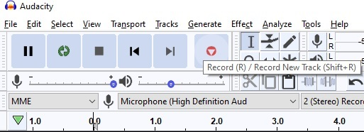
Hasil rekaman akan otomatis terisi ke dalam track. Namun, saat ini suara tersebut masih penuh noise. Untuk mengurangi noise tersebut dapat menggunakan effect noise reduction. Pertama, select interval audio track yang akan diberi effect. Kemudian, pilih effects pada toolbar dan pilih noise reduction.

Selanjutnya tekan noise profile agar Audacity dapat mengetahui jenis noise yang akan difilter. Lalu pilih efek noise reduction lagi dari toolbar untuk memunculkan noise reduction settings dan atur sesuai kebutuhan. Jika sudah, klik OK. Audacity akan mengolah suara dan memfilter noise dari suara.
Jika sudah selesai membuat audio, audio ini dapat diekspor ke bentuk yang dapat digunakan di Godot. Godot hanya support dua jenis audio file, yaitu wav dan ogg. Oleh karena itu, export audio dengan cara memilih file pada toolbar dan pilih export -> export as wav.
Audio yang sudah diexport dapat disimpan ke dalam folder assets pada project Godot kalian.
Latihan: Menambahkan Audio ke Game
Selain SFX, terdapat juga audio yang dapat menggambarkan suasana game, yaitu Background Music. Berikut cara mengimplementasikan BGM dalam game. Pertama buka level scene yang telah kamu buat. Kemudian tambahkan node AudioStreamPlayer sebagai child dari root node.

Lihat pada tab inspector di sebelah kanan. Untuk menambahkan audio ke dalam node AudioStreamPlayer, klik dropdown pada bagian stream dan pilih load.

Godot akan memunculkan prompt untuk memilih file. Pilih file bgm.wav pada directory res://assets/sound
Setelah file audio dipilih, audio wave akan muncul pada bagian stream di tab inspector.

Terdapat beberapa konfigurasi lainnya, yaitu:
- Volume db: Mengatur volume audio.
- Pitch scale: Mengatur pitch audio.
- Playing: Jika on(true), audio akan diplay saat itu juga.
- Autoplay: Jika on(true), audio akan langsung diplay saat scene pertama kali dibuka.
- Stream paused: Jika on(true), playback akan dipause.
- Max Distance: Jarak maksimal hingga audio tidak bisa didengar (digunakan ketika
AudioStreamPlayermerupakan child dari suatu game object). - Attenuation: Memperkecil audio berdasarkan jarak secara eksponensial.
- Bus: Menentukan bus mana audio akan dimainkan.
Untuk penjelasan lebih lanjut mengenai AudioStreamPlayer dapat diakses di docs
Saat ini audio masih berjalan tanpa looping. Untuk membuat audio looping, pilih berkas bgm.wav pada tab FileSystem di sebelah kiri bawah. Kemudian, buka tab Import di sebelah kiri atas. Berikut tampilan dari tab Import:

Klik loop lalu klik reimport. Godot akan mengimport audio ulang dengan menambahkan konfigurasi yang sudah dipilih sebelumnya. Tes apakah audio sudah looping dengan menjalankan scene.
Latihan Mandiri: Membuat dan Menambah Variasi Aset
Silakan eksplorasi lebih lanjut mengenai animasi berdasarkan spritesheet dan audio. Untuk latihan mandiri yang dikerjakan di akhir tutorial, kamu diharapkan untuk:
- Membuat minimal 1 (satu) objek baru di dalam permainan yang dilengkapi dengan animasi menggunakan spritesheet selain yang disediakan tutorial. Silakan cari spritesheet animasi di beberapa koleksi aset gratis seperti Kenney.
- Membuat minimal 1 (satu) audio untuk efek suara (SFX) dan memasukkannya ke dalam permainan. Kamu dapat membuatnya sendiri atau mencari dari koleksi aset gratis.
- Membuat minimal 1 (satu) musik latar (background music) dan memasukkannya ke dalam permainan. Kamu dapat membuatnya sendiri atau mencari dari koleksi aset gratis.
- Implementasikan interaksi antara objek baru tersebut dengan objek yang dikendalikan pemain. Misalnya, pemain dapat menciptakan atau menghilangkan objek baru tersebut ketika menekan suatu tombol atau tabrakan dengan objek lain di dunia permainan.
- Implementasikan audio feedback dari interaksi antara objek baru dengan objek pemain. Misalnya, muncul efek suara ketika pemain tabrakan dengan objek baru.
Beberapa ide lain yang bisa kamu coba kerjakan di luar latihan mandiri:
- Implementasi sistem audio yang relatif terhadap posisi objek. Misalnya, musik latar akan semakin terdengar samar ketika pemain semakin jauh dari posisi awal level.
Silakan berkreasi lebih lanjut untuk membuat Tutorial 3 dan 5 kamu lebih menarik dari sebelumnya!
Jangan lupa untuk menjelaskan proses pengerjaan tutorial ini di dalam berkas README.md yang sama dengan Tutorial 3. Silakan tambahkan subbab (section) baru yang berisi penjelasan proses pengerjaan Tutorial 5.
Cantumkan juga referensi-referensi yang digunakan sebagai acuan ketika menjelaskan proses implementasi.
Skema Penilaian
Pada tutorial ini, ada empat kriteria nilai yang bisa diperoleh:
- 4 (A) apabila kamu mengerjakan tutorial dan latihan melebihi dari ekspektasi tim pengajar. Nilai ini dapat dicapai apabila mengerjakan seluruh Latihan dan Latihan Mandiri, ditambah dengan memoles (polishing) lebih lanjut permainannya.
- 3 (B) apabila kamu hanya mengerjakan tutorial dan latihan sesuai dengan instruksi. Nilai ini dapat dicapai apabila mengerjakan seluruh Latihan dan Latihan Mandiri.
- 2 (C) apabila kamu hanya mengerjakan tutorial hingga tuntas. Nilai ini dapat dicapai apabila mengerjakan seluruh Latihan namun tidak mengerjakan Latihan Mandiri.
- 1 (D) apabila kamu hanya sekedar memulai tutorial dan belum tuntas.
- 0 (E) apabila kamu tidak mengerjakan apapun atau tidak mengumpulkan.
Pengumpulan
Kumpulkan semua berkas pengerjaan tutorial dan latihan ke dalam Git dan push ke repositori Git pengerjaan tutorial 3, karena tutorial 5 ini melanjutkan pengerjaan tutorial 3. Apabila kamu mengerjakan latihan mandiri, pastikan scene dan node sudah tercatat masuk ke dalam repositori Git. Kumpulkan tautan ke repositori Git hasil pengerjaan tutorial 5 kamu di slot pengumpulan yang tersedia di SCELE.
Tenggat waktu pengumpulan adalah 13 Maret 2024 pukul 21:00.
Referensi
- Kenney Assets
- Materi tutorial pengenalan Godot Engine, kuliah Game Development semester gasal 2020/2021 Fakultas Ilmu Komputer Universitas Indonesia.
Tutorial 6 - Menu and In-Game Graphical User Interface
Selamat datang pada tutorial keenam kuliah Game Development. Pada tutorial kali ini, kamu akan mempelajari cara membuat menu screen, game over screen, dan in-game GUI.
Di akhir tutorial ini, diharapkan kamu paham cara menggunakan Container, Label, Button, serta unsur-unsur lain untuk menyusun menu dan antar muka dalam game.
Daftar Isi
Pengantar
Penting! Untuk tutorial kali ini, silakan menggunakan templat proyek yang telah disediakan di GitHub ATAU melanjutkan dari pengerjaan proyek Tutorial 4. Jika melanjutkan proyek Tutorial 4, silakan mengerjakan di repositori Git pengerjaan tutorial tersebut dan membuat branch baru (misal: branch
tutorial-6).
Tampilan Antar Muka
Saat kamu pertama kali memulai suatu game, apa yang pertama kali muncul? Splash screen dengan gambar logo perusahaan pembuat game tersebut?

Atau splash screen dengan ilustrasi tokoh dari game tersebut?

Pada umumnya, mayoritas game akan memiliki menu utama (main menu). Main menu adalah layar utama yang muncul pertama kali ketika mulai bermain game. Biasanya terdapat tombol atau instruksi untuk memulai permainan pada main menu.
Selain main menu, di dalam game juga terdapat tampilan antar muka yang menampilkan informasi terkait kondisi permainan sekarang secara visual. Tampilan antar muka tersebut dinamakan sebagai game GUI (Graphical User Interface). GUI digunakan untuk menampilkan banyak hal, seperti:
- Jumlah sumber daya (misal: darah tokoh, uang virtual) yang dimiliki pemain.
- Kondisi pemain relatif terhadap lawan-lawannya (misal: peringkat ketika balapan, posisi pemain pada dunia permainan).
- Pilihan untuk masuk ke menu lain terkait permainan (biasanya pada game mobile yang dapat merespon aksi tap/sentuh layar, misal: tombol untuk membuka daftar tokoh yang bisa dikendalikan pemain).
- Dan lain-lain.
Kemudian yang tidak kalah penting adalah tampilan saat pemain mencapai kondisi akhir permainan, seperti layar yang menampilkan kondisi menang atau kondisi kalah.
Pada Tutorial 4, kita sudah berhasil membuat game platformer 2D yang cukup dasar. Namun saat menjalankan proyek, scene yang dijalankan langsung level 1 dan tidak ada menu yang muncul terlebih dahulu.
Contoh Layar Menu Utama, Layar Kondisi Menang/Kalah, dan GUI
Berikut ini adalah beberapa contoh layar menu, layar kondisi akhir permainan, dan GUI pada beberapa game populer:


Tentu saja contoh-contoh di atas hanyalah representasi kecil dari sekian banyak contoh layar permainan. Apabila kamu ada contoh lain yang menarik, silakan cerita ketika sesi tutorial berlangsung. 😃
Pada tutorial ini kita akan melakukan hal berikut:
- Membuat layar menu utama (main menu)
- Membuat indikator nyawa (life counter)
- Membuat layar kalah (game over screen)
Latihan: Membuat Menu Utama
Visualisasi
Untuk menghasilkan sebuah UI yang baik, sebaiknya kita membuat sebuah mockup terlebih dahulu. Apa saja yang ingin kita tampilkan di menu utama, dan posisi segala hal yang ingin kita tampilkan. Visualisasi boleh digambar di kertas, dan tidak harus bagus-bagus. Cukup untuk memberikan gambaran kasar apa yang ingin kita buat.
Berikut adalah contoh visualisasi main menu:

Membuat Containers, Labels, dan Buttons
Salah satu cara untuk menyusun sebuah menu dengan rapi adalah menggunakan containers. Container pada konteks desain UI pada game merupakan elemen yang akan menampung komposisi elemen UI.
Jika kamu familiar dengan desain Web, anggaplah container serupa dengan tag <div> yang sering dipakai untuk membungkus elemen-elemen HTML pada sebuah halaman Web.
Container di Godot akan membungkus elemen-elemen UI pada permainan yang dikembangkan.
Beberapa container yang terdapat di engine Godot antara lain:
MarginContaineruntuk menyusun elemen dengan paddingHBoxContaineruntuk menyusun elemen secara horizontalVBoxContaineruntuk menyusun elemen secara vertikalCenterContaineruntuk menyusun elemen secara centered
Sesuai dengan visualisasi yang telah dilakukan di atas, kita dapat menyusun main menu ini dengan susunan container sebagai berikut:
Kotak terbesar seukuran game window, dan terdapat padding di bagian ujung window.
Oleh karena itu kita menggunakan parent MarginContainer.
Kemudian layar dibagi dua kiri kanan, maka menggunakan HBoxContainer.
Di bagian kiri ada judul dan button, maka ada VBoxContainer.
Button sendiri akan kita susun dengan VBoxContainer juga.
Sedangkan sebelah kanan cukup kita berikan CenterContainer untuk gambar.

Catatan: Kamu tidak harus mengikuti struktur dan layout persis sama seperti di atas. Bahkan diperbolehkan jika kamu tidak ingin menggunakan container sama sekali untuk menu utama. Namun container sangat membantu untuk visualisasi dan kerapihan.
Mulai dengan membuat scene baru. Karena root node UI yang kita inginkan adalah container paling luar,
atur root node menjadi sebuah MarginContainer.
Jangan lupa simpan (save) scene tersebut, berikan nama MainMenu.tscn.

Pada tab Inspector, atur Custom Constants sebagai berikut:

Kemudian pada Viewport, tekan menu Layout dan pilih opsi Full Rect. Ini dilakukan agar ukuran container menyesuai ukuran window.

Sekarang masukkan elemen teks dan gambar ke dalam MarginContainer.
Untuk teks, gunakan node Label, dan untuk gambar gunakan node TextureRect.
Untuk contoh ini ada dua tombol, "New Game" dan "Stage Select", yang akan diimplementasikan menggunakan node LinkButton.
Untuk menambahkan teks pada Label atau LinkButton cukup menulis di tab Inspector bagian Text.
Untuk menambahkan gambar kepada TextureRect, sama seperti menambahkan texture di Sprite yaitu di tab Inspector bagian Texture.
Saat selesai, mungkin struktur scene dan workspace kamu akan terlihat seperti screenshot berikut:

Mungkin kamu akan menyadari bahwa tulisan pada Label dan LinkButton terlihat sangat kecil.
Selain itu, tab Inspector tidak memiliki pilihan ukuran atau jenis font.
Hal ini disebabkan karena engine Godot versi 3.5 tidak memiliki fitur untuk mengubah ukuran dan jenis font secara langsung.
So, what do we do?
Latihan: Membuat Custom Fonts
Pada engine Godot, kita harus menggunakan custom font agar dapat mengatur font dan ukurannya pada sebuah tulisan di dalam sebuah node.
Misalnya pada node Label, kita harus menggunakan objek custom font.
Untuk tutorial ini, kita akan membuat DynamicFont menggunakan font dengan ekstensi .ttf.
Sudah disediakan beberapa berkas .ttf di folder assets/Fonts/Raw/ pada templat proyek Tutorial 6.
Catatan: Jika ingin mencari font sendiri, bisa melalui situs web font gratis seperti di sini.
Pertama, tekan tombol Create Resource pada tab Inspector.
Kemudian buat sebuah DynamicFont, seperti yang tergambarkan pada screenshot berikut:


Masih pada tab Inspector, cari pilihan Font Data, lalu tekan Load dan cari berkas .ttf yang ingin digunakan.
Setelah itu, kamu dapat mengatur size sesuka hati pada opsi Size Tekan Save,
dan simpan sebagai berkas .tres di folder assets/Fonts pengerjaan Tutorial 6.

Untuk menggunakan font tersebut, cari opsi Custom Font di tab Inspector pada node Label atau LinkButton, lalu Load Resource yang baru saja dibuat.
Catatan: Seperti yang telah dijelaskan sebelumnya, tidak ada cara mengatur ukuran dan jenis font secara langsung di engine Godot versi 3. Jika ingin membuat font dengan tipe atau ukuran yang berbeda, harus membuat
DynamicFontyang berbeda.
Setelah menggunakan DynamicFont pada judul dan tombol, hasilnya terlihat seperti screenshot berikut.
Tombol New Game dan Stage Select diberi warna merah menggunakan Custom Colors pada tab Inspector:

Masih belum terlihat rapi. Sekarang tambahkan container sesuai visualisasi di atas tadi. Struktur node dan workspace seharusnya akan terlihat lebih rapi dan menyerupai screenshot berikut:
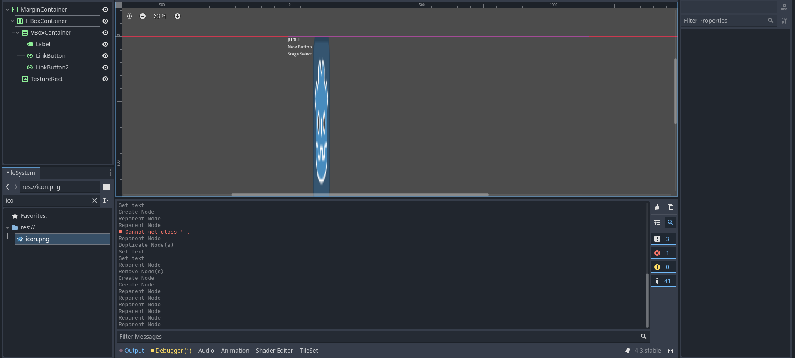
Agar judul dan tombol tidak terlalu berhimpitan, ubah Margin pada VBoxContainer parent.
Kemudian, ubah Alignment , pilih opsi Expand pada vertical di Size Flags.
Lalu atur Separation pada Custom Constants.

Selamat! Layar menu utama kamu sudah terlihat cukup rapi!

Tapi masih belum clickable tentunya. Bagaimana caranya agar saat kita menekan tombol "New Game" dia akan melempar kita ke level 1?
Latihan: Clickable Menu
Kita ingin agar saat tombol "New Game" ditekan, game akan menjalankan scene level pertama.
Pada Tutorial 4, kita sudah belajar menggunakan Signal.
Sekarang kita akan menggunakannya lagi untuk menangani event handler ketika ada aksi menekan tombol, yaitu pressed().
Gunakan cuplikan script__ berikut sebagai _script yang ditempelkan pada LinkButton:
1 2 3 4 5 6 | |
Kemudian pastikan LinkButton sedang dipilih dan lihat tab Inspector.
Isi variabel scene_to_load pada tab Inspector dengan value "Level 1"

Berhasil! Sekarang tombol "New Game" kamu akan langsung membawa pemain ke level 1.

"Mengapa saat saya tekan play (F5) yang jalan pertama bukan main menu?"
Karena MainMenu.tscn belum diatur sebagai Main Scene.
Main Scene dapat diubah di Project Settings -> Application -> Run -> Main Scene.

Latihan: Membuat GUI Life Counter
Sebelumnya kita sudah membuat kondisi dimana saat player jatuh, maka scene akan di-reload dengan player kembali ke tempat semula. Namun tidak ada penalti sama sekali untuk jatuh. Sekarang kita akan mencoba membuat kondisi dimana setiap kali player jatuh, player akan kehilangan satu nyawa. Saat sudah tidak ada nyawa lagi, maka permainan usai (game over).
Global Variables
Jika kamu pernah menyentuh bahasa pemrograman apapun, pasti sudah familiar dengan yang namanya global variable. Global Variable adalah sebuah variabel yang terlihat (visible) oleh seluruh program. Kita menggunakan global variable untuk mendefinisikan nyawa player. Nyawa player akan disimpan permanen (persist) walaupun scene baru dipanggil atau diulang-ulang. Variabel ini dapat dipanggil dari script manapun.
Pertama, klik kanan folder scripts lalu tekan New Script:

Beri nama berkas script tersebut global.gd lalu isi dengan script berikut:
1 2 3 | |
Pada Project Settings, cari tab Autoload, lalu tambahkan script global.gd (tekan icon folder di sebelah tulisan Node Name lalu cari berkas script-nya).
Setelah ditambahkan, akan muncul di dalam daftar. Pastikan kolom Singleton dalam kondisi aktif (enabled).
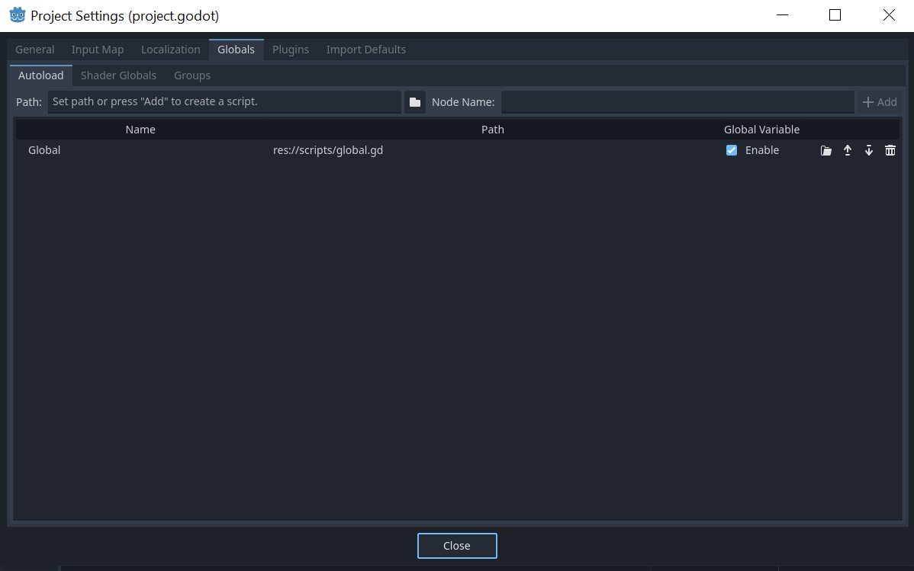
Sekarang kita punya variable nyawa yang dapat diakses kapan saja. Mari kita tampilkan menggunakan label.
Catatan: Bagi yang penasaran mengapa menggunakan global variable untuk contoh ini, alasannya karena tiap kali reload scene, player juga ikut reload. Maka
livesdisimpan dalam global variable agar tidak reset saat scene reload.
GUI Scene
Buat sebuah scene baru dan beri nama Life Counter.tscn dengan root node sebuah MarginContainer.
Buat sebuah child node Label, lalu berikan script.
Jangan lupa berikan custom font kepada node Label.
1 2 3 4 | |
Struktur akan terlihat seperti ini (MarginContainer telah di-rename menjadi "GUI"):

Pada Level 1.tscn, tambahkan sebuah CanvasLayer node sebagai child node dari node utama.
CanvasLayer merupakan node yang membuat sebuah layer 2D tersendiri untuk seluruh child-nya.
CanvasLayer berguna untuk membuat background untuk level, atau user interface seperti yang akan kita buat sekarang.
Tambahkan Life Counter.tscn yang tadi kita buat sebagai child node dari CanvasLayer.
Struktur Level 1.tscn akan terlihat seperti screenshot berikut:

Coba jalankan Level 1.tscn kamu.
Sekarang sudah muncul tampilan life counter di kiri atas yang mengikuti bentuk window yang ada.

Namun nyawa player belum berkurang ketika pemain mati. Waktunya melakukan sedikit scripting!
Ubah script di Area Trigger.gd dengan kode berikut:
1 2 3 4 5 6 7 8 9 10 11 12 13 | |
What's happening above? Karena transisi dari level 1 ke 2 menggunakan fungsi yang sama, pertama kita periksa terlebih dahulu scene yang memanggil fungsi apakah sama dengan target scene (maka reload). Jika iya, nyawa berkurang satu. Baris
passdi kondisiglobal.lives == 0akan kita isi sebentar lagi. (you could probably already guess what goes there though).

Sekarang nyawa player berkurang saat mati. Namun kita belum memasukkan kondisi dimana nyawa player 0, yaitu game over.
Latihan: Membuat Layar Game Over
Untuk membuat layar game over, langkah-langkahnya sama dengan membuat layar menu utama.
Visualisasi layar game over di contoh tutorial ini berupa tulisan GAME OVER dengan warna latar merah.
Jika ingin menambahkan warna latar, kita dapat menggunakan node ColorRect.
Buatlah sebuah scene baru dan beri nama Game Over.tscn, lalu atur sebuah ColorRect sebagai root node di scene tersebut.
Mirip seperti MarginContainer sebelumnya, pilih menu Layout pada viewport dan pilih Full Rect agar kotak mengikuti ukuran window.
Silakan ubah warna sesuka hati.

Tambahkan label bertuliskan "GAME OVER", dengan DynamicFont yang menurut kamu cocok, kemudian atur posisinya.
Selesailah Game Over screen kita!
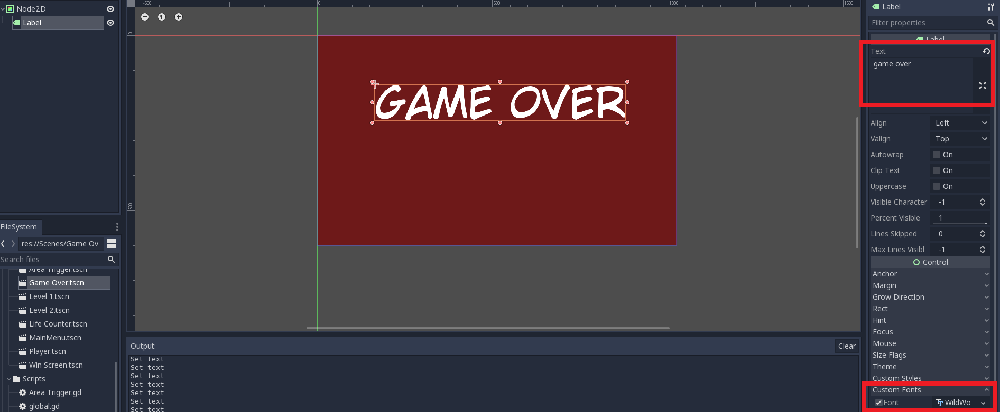
Sekarang bagaimana caranya agar saat nyawa pemain 0 akan menampilkan layar ini? Pada Area Trigger.gd ubah baris pass menjadi:
1 | |
Berhasil! Sekarang saat player nyawanya habis, layar game over akan muncul.

Selamat, tutorial ini sudah selesai!
Latihan Mandiri: Fitur Tambahan
Silakan baca referensi yang tersedia untuk membantu pengerjaan latihan mandiri. Di akhir tutorial, kamu diharapkan untuk mengerjakan minimal 2 (dua) dari beberapa contoh fitur tambahan berikut:
- Tombol pada layar game over untuk kembali ke menu utama.
- Fitur Select Stage (yang konon sudah ada button-nya di main menu namun tidak dihiraukan).
- Layar dan efek transisi antar level, dari level 1 ke level 2.
- Dan lain-lain (bebas), selama fitur tersebut melibatkan implementasi menu dan GUI di dalam game. Get creative!
Jangan lupa untuk menjelaskan proses pengerjaan tutorial ini di dalam berkas README.md.
Jika kamu melanjutkan Tutorial 4, silakan tambahkan subbab (section) baru di berkas README.md yang berisi penjelasan proses pengerjaan Tutorial 6.
Cantumkan juga referensi-referensi yang digunakan sebagai acuan ketika menjelaskan proses implementasi.
Skema Penilaian
Pada tutorial ini, ada empat kriteria nilai yang bisa diperoleh:
- 4 (A) apabila kamu mengerjakan tutorial dan latihan melebihi dari ekspektasi tim pengajar. Nilai ini dapat dicapai apabila mengerjakan seluruh Latihan dan 2 (dua) fitur tambahan yang merupakan bagian dari Latihan Mandiri, ditambah dengan memoles (polishing) lebih lanjut permainannya.
- 3 (B) apabila kamu hanya mengerjakan tutorial dan latihan sesuai dengan instruksi. Nilai ini dapat dicapai apabila mengerjakan seluruh Latihan dan 2 (dua) fitur tambahan yang merupakan bagian dari Latihan Mandiri.
- 2 (C) apabila kamu hanya mengerjakan tutorial hingga tuntas. Nilai ini dapat dicapai apabila mengerjakan seluruh Latihan namun tidak mengerjakan Latihan Mandiri.
- 1 (D) apabila kamu hanya sekedar memulai tutorial dan belum tuntas. Nilai ini dapat dicapai apabila belum tuntas mengerjakan Latihan.
- 0 (E) apabila kamu tidak mengerjakan apapun atau tidak mengumpulkan.
Pengumpulan
Kumpulkan semua berkas pengerjaan tutorial dan latihan ke repositori Git. Kemudian, push riwayat commit-nya ke repositori Git pengerjaan Tutorial 6. Ingat kembali instruksi di awal Tutorial 6, kamu dapat memilih membuat repositori baru khusus untuk pengerjaan Tutorial 6 atau menggunakan repositori Tutorial 4 sebagai templat untuk mengerjakan Tutorial 6. Jika melanjutkan Tutorial 4, jangan lupa untuk mengambil aset yang dibutuhkan dari templat proyek Tutorial 6.
Apabila kamu mengerjakan latihan mandiri, pastikan scene dan node yang kamu buat dan ubah telah tercatat masuk ke dalam repositori Git. Kumpulkan tautan ke repositori Git hasil pengerjaan Tutorial 6 kamu di slot pengumpulan yang tersedia di SCELE.
Tenggat waktu pengumpulan adalah Rabu, 17 April 2024, pukul 21:00.
Referensi
- Main Menu
- GUI Design
- Kenney Assets
- Materi tutorial pengenalan Godot Engine, kuliah Game Development semester gasal 2020/2021 Fakultas Ilmu Komputer Universitas Indonesia.
Selingan Menarik (Intermezzo)
Berikut ini adalah gambar meme yang diambil dari sebuah thread di Reddit:
Gambar tersebut menampilkan screenshot dari sebuah game yang diubah sehingga mengandung elemen-elemen GUI dari banyak game lain. Apa saja judul game yang bisa kamu kenali dari elemen GUI-nya pada meme tersebut? Jika kamu mengenali satu atau lebih elemen GUI di screenshot tersebut, apa fungsi elemen GUI tersebut di game aslinya?
Silakan didiskusikan dengan rekan-rekan sekelas ketika membahas materi mengenai Interface pada game, atau dijadikan bahan obrolan santai di grup pertemanan masing-masing.
Ended: Tutorials
Exam Issue Template
The following is the issue template for describing the programming task during the final exam. Each student will receive the issue on their own GitLab/GitHub repository.
Indonesian / Bahasa Indonesia
1 2 3 4 5 6 7 8 9 10 11 12 13 14 15 16 17 18 19 20 21 22 23 24 25 26 27 28 29 30 31 32 33 34 35 36 37 38 39 40 41 42 43 44 45 46 47 48 49 50 51 52 53 54 55 56 57 58 59 60 61 62 63 64 65 66 67 68 69 70 71 72 73 | |